Introduction
The primary objective of this study is to model and anticipate the price of Bitcoin using a set of economic, financial, behavioral, and technical variables, while accounting for delayed effects (lags), market volatility, and the complex dynamics inherent to digital assets.
Based on five years of consolidated historical data, this study aims to address two key challenges:
- Understanding the factors that significantly influence Bitcoin’s price movements.
- Developing a robust model capable of forecasting future prices using reliable data sources and modern modeling techniques.
Context and Relevance of the Study
The emergence of cryptocurrencies (particularly Bitcoin) has reshaped global financial dynamics over the past decade. Initially perceived as a speculative asset, Bitcoin is now increasingly integrated into institutional investment strategies and is being considered as a store of value, a potential hedge against inflation, and a high-risk, high-reward asset class.
This study is particularly relevant for several reasons:
- Institutionalization of Bitcoin: Major financial actors, including hedge funds, asset managers, and publicly traded companies, are actively adopting Bitcoin through direct holdings or through regulated financial instruments such as exchange-traded funds (ETFs). This institutional demand is accelerating the need for structured, data-driven analysis.
- Rising correlations with traditional markets: Bitcoin is no longer entirely decoupled from global financial trends. Recent years have shown an increasing correlation between Bitcoin and macroeconomic variables, including interest rates, inflation expectations, equity indices such as the S&P 500, and commodities like gold and oil.
- Persistent volatility: Despite its growing legitimacy, Bitcoin remains a highly volatile asset, with price movements often amplified by speculative behavior, regulatory developments, geopolitical events, and shifts in investor sentiment. This volatility underscores the importance of analytical tools that can help understand and anticipate market movements.
- Abundance of data and modeling opportunities: The cryptocurrency ecosystem offers a wealth of high-frequency, real-time data—ranging from market indicators and macroeconomic signals to behavioral and sentiment metrics. This data landscape creates unique opportunities to design predictive models that go beyond traditional financial analytics.
- Growing demand for decision-support models: Whether for institutional investors, risk managers, or informed retail participants, there is a pressing need for robust, interpretable, and adaptable models that can explain the drivers of Bitcoin's price and provide insights for short- and medium-term positioning.
In this context, developing a comprehensive forecasting model that integrates macroeconomic, financial, behavioral, and technical dimensions is both timely and strategically valuable.
Methodology
This study is based on a structured and rigorous methodology designed to ensure both interpretability and predictive accuracy. The full process follows ten key steps:
- Define the modeling objective and identify relevant economic, financial, behavioral, and technical variables.
- Import data from reliable sources (APIs and CSV files).
- Clean the data and test for multicollinearity.
- Conduct exploratory visual analysis of each variable.
- Formulate and validate hypothesis about variable influence.
- Determine optimal time lags for explanatory power.
- Run robust multivariate linear regressions (OLS with Newey-West correction).
- Analyze results and document contextual events.
- Create trend-based features (momentum, MA, MACD).
- Train predictive models (Ridge, Random Forest) with hyperparameter optimization.
This dual approach—first explanatory, then predictive—ensures both statistical insight and forecasting performance.
Research & Data Collection
The table below summarizes the key variables used in the model, their data sources, and a brief explanation of each variable. All datasets were processed in Python using a dedicated notebook, available at the end of this section.
| Variable | Source | Description |
|---|---|---|
| Bitcoin Close (BTC) | Yahoo Finance (API) | Daily closing price of Bitcoin in USD. |
| BTC Volume | Yahoo Finance (API) | Daily trading volume as liquidity indicator. |
| BTC Volatility | Yahoo Finance (API) | Rolling standard deviation of Bitcoin returns. |
| Oil Price (Brent) | Yahoo Finance (API) | Benchmark crude oil price for global macroeconomic trends. |
| Gold Price | Yahoo Finance (API) | Safe-haven asset often compared to Bitcoin. |
| DXY (US Dollar Index) | Yahoo Finance (API) | Measures the strength of the US dollar against major currencies. |
| GBTC ETF | Yahoo Finance (API) | Institutional exposure proxy via the Grayscale ETF. |
| S&P 500 Index | Yahoo Finance (API) | US equity market index for measuring macro sentiment. |
| CSI 300 Index | Yahoo Finance (API) | Chinese stock market benchmark for international exposure. |
| Interest & Inflation Rate | FRED (API) | Official US interest rate and inflation indicators. |
| M2 Money Supply (USA) | FRED (API) | Total money supply including savings, checking, and cash. |
| Google Search Trend | Google Trends (CSV / weekly) | Weekly search interest for “Bitcoin”, interpolated daily. |
| Fear & Greed Index | Alternative.me (API) | Market sentiment index measuring fear vs. greed. |
| USDT-M Futures | Bitget (API) | Used to gauge leveraged market activity in crypto. |
| Blockchain Metrics (Hash Rate, Difficulty) | blockchain.info (CSV) | Technical metrics reflecting Bitcoin network performance. |
| BTC Dominance | Constructed from CryptoCompare (API) | Computed as BTC market cap / (BTC + top 4 altcoins market cap), using circulating supply estimates. |
| Aggregate Finance (China) | Bank of China (CSV / monthly) | Credit injections to the real economy in China. |
| NVT Ratio | Glassnode (CSV) | Network Value to Transactions ratio, a fundamental valuation metric for Bitcoin. |
| SSR (Stablecoin Supply Ratio) | International Monetary Fund (CSV) | Proxy for buy-side pressure from stablecoins vs. BTC market cap. |
| Conflict Count (10+ daily deaths) | ACLED (Armed Conflict Location & Event Data Project) (CSV) | Global geopolitical instability indicator. |
| Total Deaths in Conflicts | ACLED (Armed Conflict Location & Event Data Project) (CSV) | Severity of global conflicts over time. |
Data Cleaning & Frequency Alignment
To ensure consistency across all features used in the model, we applied a systematic data cleaning and harmonization process. The entire dataset was aligned to a daily frequency to match the target variable (Bitcoin Close), and several variables required special handling due to their native frequency or missing data issues.
Below is a summary of how specific variables were treated:
- Inflation Rate (10Y): This variable was initially considered but ultimately dropped due to the high correlation with M2, making its informational contribution redundant.
- Fear & Greed Index: The original source had gaps and an irregular update pattern. A secondary, more complete dataset was identified and used. Remaining gaps were filled using linear interpolation, preserving the structure of the index while ensuring completeness.
- Google Search Trend: Data from Google Trends is inherently weekly. To bring it to a daily frequency, we applied a linear interpolation between weekly values, followed by resampling and smoothing to reduce artificial jumps.
- Aggregate Finance on Real Economy (China): Originally available on a monthly basis, this indicator was extrapolated to daily frequency using forward filling combined with low-pass smoothing. This retained the macroeconomic signal while avoiding artificial volatility.
- Weekend data handling: Since many macroeconomic and financial indicators are not available on weekends (e.g., stock indices, interest rates), we decided to remove weekend rows from the final dataset. This prevents forward-filled noise from distorting the learning process.
After cleaning and aligning the data, we also ensured that all column formats were consistent with their intended data types. This step was critical to avoid type-related issues during modeling and to ensure proper interpretation of each feature. All numeric variables were explicitly cast to float or integer, and all date columns were parsed and set as datetime objects. Below is a summary of the final data types used for each variable.
| Variable | Data Type |
|---|---|
| Date | datetime |
| Close | float |
| Volume | float |
| Volatility | float |
| Interest Rate | float |
| Inflation Rate (10Y) | float |
| M2 (USA) | float |
| Fear & Greed Index | float |
| Google Search Trend | float |
| GBTC ETF | float |
| Oil Price (Brent) | float |
| Gold Price | float |
| DXY | float |
| SSR | float |
| NVT Ratio | float |
| BTC Dominance | float |
| difficulty | float |
| hash-rate | float |
| S&P 500 Index | float |
| CSI 300 Index | float |
| Aggregate Finance (China) | float |
| Conflict Count | integer |
| Total Deaths in Conflicts | integer |
We also thoroughly validated the date continuity across the dataset. The vast majority of weekdays are present, with only a few missing entries corresponding to public holidays, mostly around end-of-year periods such as Christmas and New Year's. These gaps were considered statistically insignificant and were therefore left unfilled to preserve the natural structure of the time series.
| Variable X | Variable Y | Correlation X,Y > 0.9 |
|---|---|---|
| SSR | Close | 0.999984 |
| High | BTC/USDT | 0.999652 |
| Close | BTC/USDT | 0.999429 |
| SSR | BTC/USDT | 0.999421 |
| BTC/USDT | Open | 0.999420 |
| Low | BTC/USDT | 0.999303 |
| Close | High | 0.999132 |
| SSR | High | 0.999099 |
| Open | High | 0.999038 |
| Low | SSR | 0.998906 |
| Close | Low | 0.998895 |
| Low | Open | 0.998563 |
| High | Low | 0.998517 |
| Open | Close | 0.997710 |
| Open | SSR | 0.997695 |
| difficulty | hash-rate | 0.985252 |
| date | difficulty | 0.934203 |
| date | hash-rate | 0.925835 |
| CLOSECSI300 | Interest rate | -0.913243 |
| Inflation Rate (10Y) | M2usa | 0.911530 |
| date | Interest rate | 0.900885 |
| Low | CLOSES&P500 | 0.900514 |
To avoid multicollinearity issues and ensure model robustness, we have decided to exclude several variables based on their extremely high correlation coefficients.
Specifically, we will remove the SSR and BTC/USDT variables. Both are not only highly correlated with each other, but also with the target variable Close, with correlation values exceeding 0.99. Including these variables would add redundancy without providing additional explanatory power.
We will also exclude the Low, High, and Open price variables. Since our model uses Close as the daily target variable, the inclusion of other price points from the same day would create information leakage and is therefore not appropriate.
Regarding blockchain metrics, the variables difficulty and hash rate are extremely correlated. We will only retain difficulty, which is sufficient to capture network dynamics in our analysis.
Finally, the relationship between the Interest Rate and CLOSECSI300 is worth further exploration. These variables will be retained for the rest of the analysis.
Visual Analysis
GENERAL TRENDS

For visual analysis in Tableau, all variables were normalized using a 0–1 scaling method (MinMaxScaler from Scikit-learn). This technique transforms each feature to fall within the same range, allowing for consistent visual comparison across variables with very different scales and units.
Normalization enables a clearer interpretation of relative dynamics between variables, making trends, peaks, and divergences easier to observe within a single unified chart. It is particularly useful when comparing assets like Bitcoin with macroeconomic or sentiment indicators.
This transformation was used exclusively for visualization. All statistical and predictive analyses were conducted using the original data to preserve the true magnitudes and relationships between variables.
S&P500 VS BITCOIN

The chart compares the normalized price of Bitcoin with the S&P 500 index over the full observation period. While Bitcoin remains significantly more volatile, its medium-term movements often mirror those of the equity market, especially during periods of macroeconomic stress or euphoria.
This partial correlation has strengthened in recent years, suggesting that Bitcoin is increasingly reacting to traditional market drivers such as monetary policy, central bank announcements, or global economic indicators. The spread highlights periods of divergence between the two assets.
Recent crossovers between the normalized curves mark potential turning points. The latest instance, where the S&P 500 overtakes Bitcoin, could indicate a phase of consolidation for crypto, depending on how broader market conditions evolve.
DXY VS BITCOIN

This chart compares the normalized evolution of the DXY (US Dollar Index) and Bitcoin over the full analysis period. A general inverse relationship can be observed : when the DXY rises, Bitcoin tends to stagnate or decline, and vice versa.
This inverse correlation reflects a common macroeconomic pattern: a strong dollar is typically associated with global risk aversion, weighing on alternative assets such as Bitcoin. Conversely, a weakening dollar often signals increased liquidity and a shift toward risk-on sentiment.
Cross-movements and divergence phases between the two curves highlight key moments when Bitcoin either reacts sharply to changes in dollar strength or temporarily decouples. The chart reinforces the role of the DXY as a key macro driver in Bitcoin price dynamics.
BTC DOMINANCE VS BITCOIN

BTC Dominance is a relevant indicator for anticipating early-stage bull markets. A rising dominance typically reflects a rotation of capital toward Bitcoin as a safer crypto asset before risk spreads to altcoins. This behavior often marks the beginning of a new bullish cycle centered on Bitcoin.
The indicator is calculated based on the estimated market capitalization of the top cryptocurrencies — BTC, ETH, BNB, USDT, and XRP.
The dominance metric is calculated as:
In the chart, we observe that phases of rising dominance often coincide with or even precede Bitcoin price increases, making it a potential leading indicator. Conversely, declining dominance during price rallies can signal a more speculative or late-cycle phase. This makes BTC Dominance a key variable to monitor alongside price action.
FEAR & GREED INDEX VS BITCOIN

The Fear & Greed Index is a composite indicator that measures overall market sentiment based on various signals such as volatility, volume, social media trends, and Bitcoin dominance. It ranges from 0 (extreme fear) to 100 (extreme greed), providing a synthetic view of investor emotion.
In the chart, we observe that sharp increases in the Fear & Greed Index often precede or accompany Bitcoin price rallies. These periods of renewed optimism are aligned with clear upward momentum. Conversely, drops in sentiment generally correlate with phases of consolidation or temporary pullbacks.
This visual correlation suggests that the index can act as a trend signal, capturing growing investor confidence at the early stages of bullish cycles. It appears to function more as a momentum companion than a reversal indicator, making it a valuable behavioral metric for tracking the strength of price trends.
GBTC VS BITCOIN

The Grayscale Bitcoin Trust (GBTC) is a publicly traded financial product that offers investors access to the Bitcoin market through a regulated vehicle. It serves as an alternative to direct crypto ownership and is widely used by institutional participants.
The chart shows a largely parallel evolution between GBTC and Bitcoin’s price. Both curves follow broadly similar trends over the entire period, although some short-term deviations can be observed.
This behavior suggests that GBTC may be a relevant variable to consider in a predictive model, as a proxy for institutional interest and engagement with Bitcoin-related investment products.
GOLD VS BITCOIN

The price of gold is traditionally viewed as a safe-haven asset, used by investors to hedge against inflation, economic uncertainty, or geopolitical risk. It is often compared to Bitcoin, especially in debates about long-term value preservation.
In the chart, we observe that gold and Bitcoin sometimes exhibit parallel trends, particularly during certain synchronized bullish phases. However, frequent divergences also appear, highlighting distinct behaviors in response to market cycles and investor sentiment.
These differences suggest that gold may not consistently track Bitcoin, but it could still serve as a complementary variable when analyzing how capital moves between traditional and digital assets during different market regimes.
GOOGLE SEARCH VS BITCOIN

Public interest in Bitcoin is often measured through the frequency of Google searches. This behavioral indicator helps capture how much attention the asset is receiving from the general public, particularly during periods of strong volatility or bullish momentum.
The chart shows that Google search spikes often align with Bitcoin price peaks, and sometimes precede them slightly. These patterns tend to emerge during bull markets, reflecting a growing wave of mainstream interest.
This correlation suggests that search trends may be a valuable signal for predictive modeling, as a proxy for market sentiment and public engagement with Bitcoin.
NVT RATIO VS BITCOIN

The NVT Ratio (Network Value to Transactions) is a fundamental metric used to assess whether Bitcoin is overvalued or undervalued relative to its transaction volume. It is often compared to the traditional P/E ratio in equity markets: a high NVT may signal speculative overvaluation, while a low ratio might suggest stronger fundamental usage.
In the chart, the visual relationship between the NVT Ratio and Bitcoin's price appears relatively weak. Peaks in the NVT do not consistently align with major turning points in price, and at times the two indicators move in opposite directions or remain disconnected.
This suggests that the NVT Ratio may provide more structural insights than short-term signals. Its inclusion in a predictive model could still be valuable, but its true utility will need to be assessed through empirical testing rather than visual inspection alone.
INTEREST RATE VS BITCOIN

Interest rates, particularly those set by the Federal Reserve, are among the most influential macroeconomic variables. Rate hikes tend to tighten financial conditions and reduce market liquidity, while lower rates encourage borrowing, investment, and risk-taking — all of which can influence crypto markets.
The chart shows a notable inverse relationship between interest rates and the price of Bitcoin. Periods of low or falling rates — such as in 2020 and 2021 — coincided with strong upward movements in Bitcoin. In contrast, the tightening cycle that began in 2022 aligned with a decline in crypto valuations.
This visual correlation reinforces the idea that Bitcoin is behaving more like a macro-sensitive asset. As such, interest rates are a key input in any predictive model aiming to capture shifts in market sentiment or liquidity cycles.
CSI 300 VS BITCOIN

The CSI 300 Index tracks the performance of the 300 largest stocks on the Shanghai and Shenzhen stock exchanges. It is widely used as a proxy for Chinese equity markets and serves as a macroeconomic signal reflecting investor sentiment in Asia.
The chart shows periods of both alignment and divergence between the CSI 300 and Bitcoin. While Bitcoin remains more volatile, some medium-term trends appear to be partially synchronized, especially during broad global risk-on or risk-off movements.
However, it is important to note that CSI 300 data is only available from 2021 onward, creating a missing segment for the first year of the study (March 2020 to March 2021). This data gap may limit the ability to fully assess long-term interactions and should be considered carefully when incorporating this variable into predictive modeling.
MINING DIFFICULTY VS BITCOIN

The mining difficulty represents the level of computational effort required to validate a new block on the Bitcoin blockchain. It automatically adjusts approximately every two weeks to maintain a regular block creation rate (about every 10 minutes), regardless of fluctuations in the total hash power on the network.
The chart shows a generally upward trend in difficulty over the full period, with occasional dips or plateaus. While some difficulty increases coincide with Bitcoin price rises, the short-term correlation appears inconsistent, suggesting a more structural than reactive behavior.
As a structural indicator, mining difficulty captures network confidence and miner activity. Its slow-moving nature makes it a valuable long-term signal, potentially useful in predictive models as a stability feature rather than a short-term driver of Bitcoin price fluctuations.
M2 MONEY SUPPLY (USA) VS BITCOIN

The M2 Money Supply represents the amount of money circulating in the U.S. economy, including cash, checking accounts, savings, and other forms of liquidity. It is a key macroeconomic indicator for assessing monetary policy and the availability of liquidity in financial markets.
The chart shows a clear upward trend in M2, with a notable surge during 2020–2021. This spike coincides with a major rally in Bitcoin, suggesting a potential relationship between monetary expansion and crypto performance. However, after 2022, the visual correlation becomes less consistent and harder to interpret.
M2 is a valuable feature for modeling Bitcoin behavior, particularly to capture macro liquidity cycles. However, it is important to note that recent values for late 2025 have been extrapolated using a regression based on a correlated macroeconomic variable. This allows the dataset to be extended but warrants close monitoring of its reliability during modeling.
BTC VOLUME VS BITCOIN

Bitcoin’s daily trading volume represents the total value of coins exchanged on the market during a given day. It is commonly used to assess liquidity and market activity, offering insight into the level of investor participation and potential interest in the asset.
The graph shows several notable peaks in trading volume, many of which coincide with sharp movements in the Bitcoin price—either upward or downward. However, some volume spikes appear disconnected from major price shifts, suggesting the relationship is not perfectly linear or consistent over time.
BTC volume remains a valuable complementary indicator for modeling purposes. It can help detect moments of increased market engagement, such as during trend reversals or breakout phases. While it may not independently predict price movements, its inclusion in a multivariate model could enhance predictive robustness when combined with other variables.
S&P 500 VOLUME VS BITCOIN

The S&P 500 volume reflects the total number of shares traded on the index during a given day. It is commonly used as a measure of market liquidity and can indicate shifts in investor sentiment or market stress.
The chart compares the normalized S&P 500 trading volume with Bitcoin’s price. While occasional spikes in trading activity coincide with market turning points in Bitcoin, the alignment is not consistent over time.
As a result, the S&P 500 volume appears to act more as a contextual variable than a direct predictor. It may prove useful when considered alongside other macro indicators, particularly during high-volatility periods.
BITCOIN VOLATILITY

Bitcoin volatility refers here to the realized standard deviation of daily returns, capturing the magnitude of price fluctuations over time, regardless of direction.
The chart displays repeated volatility spikes, often aligned with major price movements. Some of these peaks precede key turning points, while others appear to be reactive, following rapid market movements. Periods of low volatility tend to coincide with consolidations or slow upward trends.
Volatility is a structural market behavior indicator that can help detect regime changes. While it does not predict direction, it provides alert signals that can help adjust model sensitivity or feature weightings. It is therefore a valuable complementary variable in predictive modeling.
GLOBAL CONFLICTS VS BITCOIN


The visualizations below examine the potential relationship between the daily count of violent conflicts (resulting in more than 10 deaths) and the price of Bitcoin. These figures are sourced from the ACLED global conflict database, which tracks geopolitical violence across countries. Two indicators are considered: the number of daily conflict events and the total number of deaths associated with them.
Visually, there appears to be no clear or consistent correlation. While some periods of heightened geopolitical tension seem to coincide with Bitcoin volatility, such patterns are not easily generalizable. Bitcoin's response to conflict appears to be highly context-dependent, rather than directly tied to the frequency or severity of global unrest.
It is also important to note that conflict-related data is only available for approximately three out of the five years in the full dataset. As a result, these variables will be included in exploratory regressions, but their final inclusion in the predictive model will depend on their statistical significance. Their relevance will be assessed rigorously, without assuming explanatory power upfront.
AGGREGATE FINANCE (CHINA) VS BITCOIN

The Aggregate Finance to the Real Economy (China) indicator reflects the volume of financial resources allocated to the Chinese economy, including loans, bonds, and other credit instruments. It is widely used as a proxy for domestic credit stimulus and economic policy interventions in China.
These data were initially available on a monthly basis and were interpolated to daily frequency by replicating each monthly value across all days of the corresponding month. Although this method limits daily variability, some upward movements in aggregate finance appear to coincide with periods of rising Bitcoin prices, especially after 2021.
Due to China's importance in the crypto ecosystem, this macroeconomic signal remains relevant for modeling. However, because of its low granularity and smoothing method, this variable should be interpreted with caution and is flagged as one to monitor carefully during the forecasting phase.
| Variable | Hypothesis |
|---|---|
| S&P 500 Index | Partial correlation with Bitcoin, especially during macro trends. |
| DXY | Inverse relationship with Bitcoin; rising dollar may weigh on BTC. |
| BTC Dominance | Can signal the start of new bullish cycles; early capital rotation to BTC. |
| Fear & Greed Index | High index levels often precede upward BTC movements. |
| GBTC ETF | Strong directional similarity with BTC; reflects institutional sentiment. |
| Gold Price | Occasional alignment with BTC during uncertainty, but not consistent. |
| Google Search Trend | Search spikes often align with or precede BTC price tops. |
| NVT Ratio | Visual relationship unclear; complex signal. |
| Interest Rate | Potential inverse trend with BTC; to be validated statistically. |
| Oil Price | No strong visual link observed with BTC price. |
| CSI 300 Index | Some positive correlation, but data is limited pre-2021. |
| Difficulty | Lagged positive relationship with BTC over long cycles. |
| Aggregate Finance (China) | Could reflect Chinese macro trends impacting BTC. |
| M2 (USA) | Broad upward trend; macroeconomic influence suspected. |
| BTC Volume | Rises in volume often precede large price movements. |
| S&P 500 Volume | Few visible patterns; low explanatory power visually. |
| BTC Volatility | Closely tied to BTC price drops; reactive rather than predictive. |
| Conflict Count | May influence BTC in some peaks; data too recent to confirm. |
Univariate Regressions & Hypothesis Validation
METHODOLOGICAL CLARIFICATIONS
In this section, we aim to validate the hypotheses formulated during the visual analysis phase through a series of simple univariate regressions between each explanatory variable (normalized) and the target variable Close_norm. These regressions help quantify the individual influence of each factor on Bitcoin price dynamics.
It is important to note that all regressions were performed on variables normalized using MinMaxScaler (range 0 to 1) to allow for comparable interpretation of coefficients. However, we identified a potential risk of data leakage due to the fact that optimal lags were initially calculated on normalized variables.
To address this, lags will be recomputed later using the original, non-normalized variables before building the multivariate regression model. This ensures the statistical validity and robustness of our overall modeling process.
For each variable, this section presents the OLS regression summary table, a concise interpretation of the results, a screenshot of the regression output (from Google Colab), and a direct link to the notebook used to run the analysis.
S&P500
| Variable | Coefficient | p-value | R² | Validated |
|---|---|---|---|---|
| CLOSES&P500 | 1.0691 | < 0.001 | 0.750 | ✅ |
The regression results confirm a strong and highly significant positive relationship between the normalized S&P500 index and the normalized Bitcoin price. The coefficient is close to 1.07, indicating that when the S&P500 increases by one unit (normalized scale), Bitcoin tends to rise by a similar magnitude. With an R² of 0.75, the model explains a large portion of the variance in Bitcoin prices.
This strong relationship aligns with our visual analysis and confirms that macroeconomic conditions reflected in the S&P500 index play a significant role in Bitcoin’s price fluctuations. The hypothesis is clearly validated by this univariate regression.
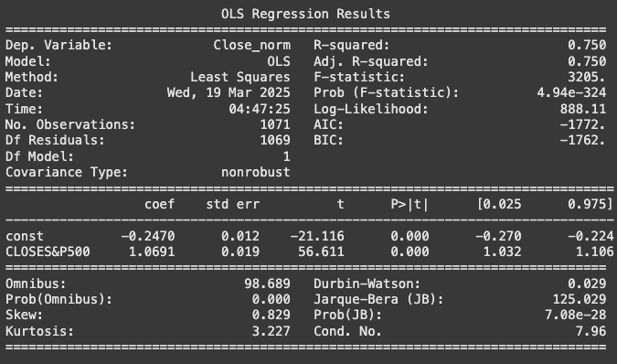
DXY (US Dollar Index)
| Metric | Value |
|---|---|
| R² | 0.030 |
| Adjusted R² | 0.029 |
| Coefficient | 0.1649 |
| p-value | < 0.001 |
| Validated Hypothesis | Partially (lag likely required) |
The univariate regression between the DXY (Dollar Index) and Bitcoin (normalized close) reveals a statistically significant but weak relationship, with an R² of 3%. This means the DXY only explains a small fraction of Bitcoin's price movements in a direct, daily comparison.
This result echoes the visual analysis, which suggested a potential lagged inverse relationship between the two. These findings justify a deeper investigation using optimal lag structures in the multivariate phase.
Notably, a structural shift in correlation appears around late 2023, suggesting that Bitcoin's sensitivity to macroeconomic indicators such as the DXY might be evolving. This change will be revisited during the final interpretation stage.
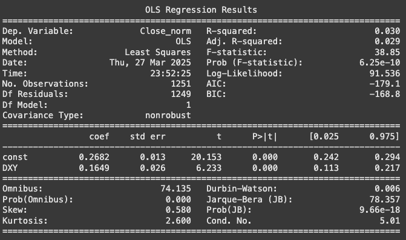
BTC DOMINANCE
| Metric | Value |
|---|---|
| R² | 0.553 |
| Adjusted R² | 0.552 |
| Coefficient | 0.7772 |
| p-value | < 0.001 |
| Validated Hypothesis | ✅ Yes |
The univariate regression between BTC Dominance and Bitcoin price (normalized) confirms a strong and significant relationship. With an R² of 55%, this variable alone explains over half of the price variation of Bitcoin, making it a key macro indicator in the crypto ecosystem.
The positive coefficient (0.7772) supports the hypothesis that a rising BTC Dominance typically aligns with price increases. This result reinforces the visual patterns observed earlier and confirms BTC Dominance as a strong candidate for predictive modeling.
Further tests with lag structures will help verify the temporal dynamics of this relationship. The variable will be retained for multivariate modeling phases.
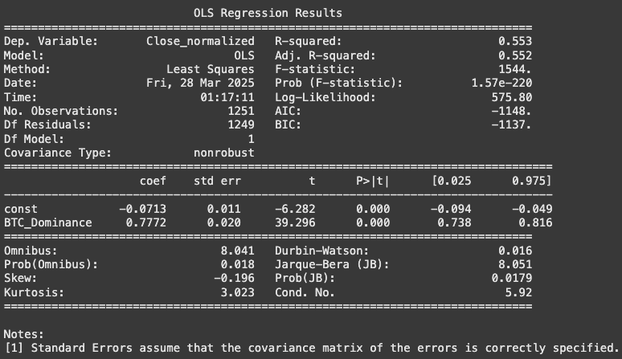
Fear & Greed Index
| Metric | Value |
|---|---|
| R² | 0.107 |
| Adjusted R² | 0.106 |
| Coefficient | 0.0026 |
| p-value | < 0.001 |
| Validated Hypothesis | Partially (likely with lag) |
The univariate regression between the Fear & Greed Index and Bitcoin (normalized close) reveals a statistically significant positive relationship, with a coefficient of 0.0026 and a p-value below 0.001. However, the R² remains moderate at 10.7%, suggesting that this behavioral metric only explains a limited portion of Bitcoin’s daily price movements.
This outcome partially confirms the visual analysis, where the index tends to move in tandem with Bitcoin price but doesn’t appear as a dominant explanatory factor in a direct, daily relationship. The predictive power might increase when optimal lags are introduced — especially considering that some peaks in "greed" precede major price increases.
As a result, this indicator remains relevant for behavioral modeling, although its role will need to be reassessed with lag structures in the multivariate regression phase.
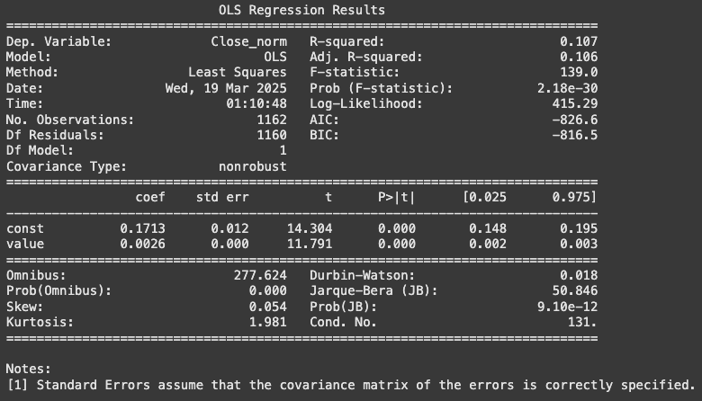
GBTC (Grayscale Bitcoin Trust)
| Metric | Value |
|---|---|
| R² | 0.003 |
| Adjusted R² | 0.002 |
| Coefficient | 0.1245 |
| p-value | 0.043 |
| Validated Hypothesis | No (weak relationship) |
The univariate regression between GBTC and Bitcoin's normalized price shows a statistically significant but very weak relationship, with a coefficient of 0.1245 and a p-value of 0.043. However, the explained variance is minimal, with an R² of just 0.3%.
This result confirms the limitations observed during the visual analysis: while GBTC may reflect broader market sentiment or institutional activity, it does not appear to directly influence Bitcoin’s daily price movements in a linear, unlagged setup.
It is likely that the value of this variable lies in more complex or delayed dynamics, which will be further explored in the multivariate modeling phase with lag structure.
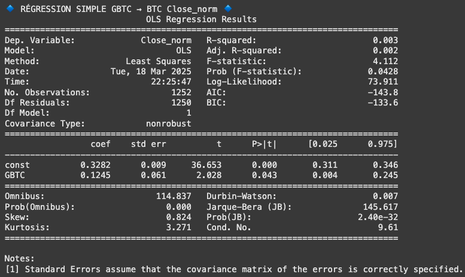
Gold Price
| Metric | Value |
|---|---|
| R² | 0.592 |
| Adjusted R² | 0.591 |
| Coefficient | 0.8557 |
| p-value | < 0.001 |
| Validated Hypothesis | Yes |
La régression univariée entre le prix de l’or (Gold_Price) et le cours du Bitcoin (Close) met en évidence une relation positive forte et statistiquement significative. Le R² de 59,2% indique que le prix de l’or explique à lui seul plus de la moitié des variations du Bitcoin sur la période étudiée.
Ce résultat semble confirmer l’hypothèse d’une corrélation partielle entre les deux actifs, possiblement en tant que valeurs alternatives dans certains contextes macroéconomiques. Cependant, il faudra approfondir cette relation en testant différents retards temporels (lags) lors de la modélisation multivariée, et en tenant compte d'autres variables influentes.
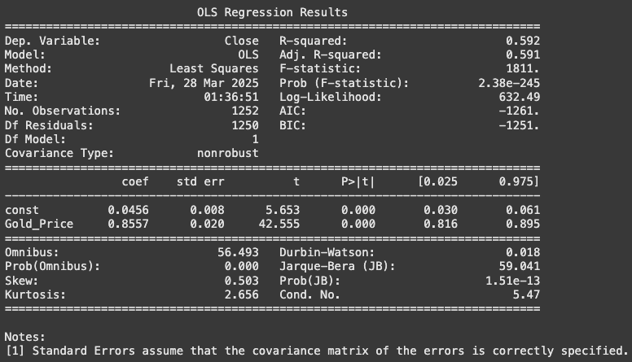
Google Search Interest
| Metric | Value |
|---|---|
| R² | 0.144 |
| Adjusted R² | 0.143 |
| Coefficient | 0.5560 |
| p-value | < 0.001 |
| Validated Hypothesis | Yes |
The univariate regression between Google Search Interest and Bitcoin (normalized close) shows a statistically significant positive relationship, with an R² of 14.4%. This suggests that public attention, as reflected in search trends, plays a moderate role in explaining Bitcoin's price fluctuations.
The estimated coefficient (0.5560) confirms a positive correlation: increases in search volume are associated with price increases. While this result supports our initial assumption, further analysis is needed to evaluate whether a lagged effect might enhance predictive power.
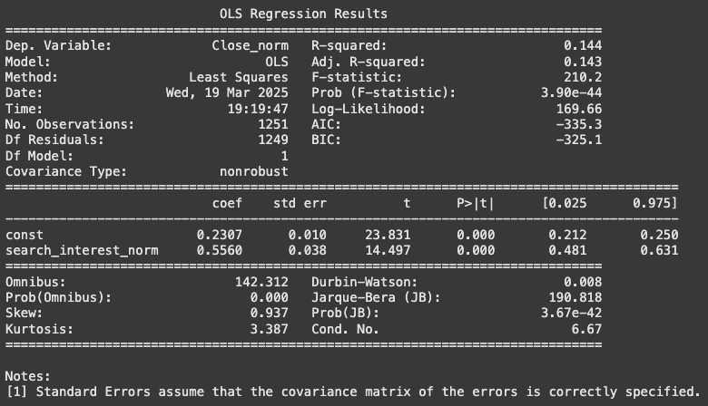
NVT Ratio
| Metric | Value |
|---|---|
| R² | 0.025 |
| Adjusted R² | 0.024 |
| Coefficient | 0.2181 |
| p-value | < 0.001 |
| Validated Hypothesis | Yes (weak relationship) |
The univariate regression between the NVT Ratio and Bitcoin normalized close reveals a weak but statistically significant relationship, with an R² of 2.5%. This suggests the NVT Ratio explains a small portion of Bitcoin’s short-term fluctuations.
This aligns with the visual analysis, which hinted at a possible relationship without clear, consistent alignment. Such a metric may gain predictive power when combined with other variables or when modeled using optimal lags, to be explored in the multivariate analysis phase.
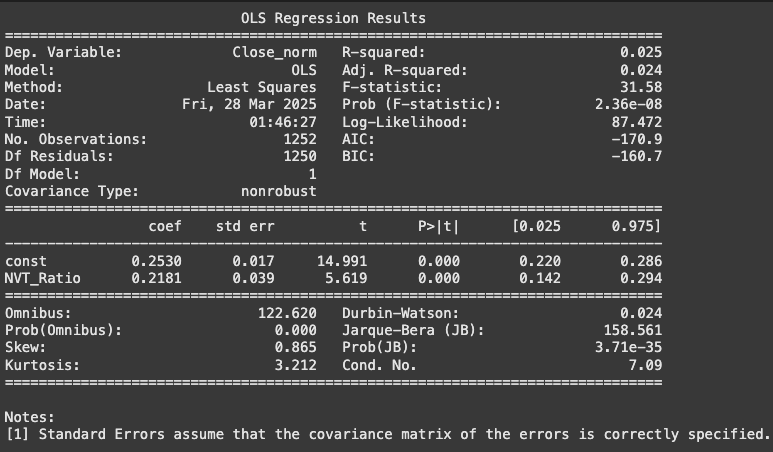
Interest Rate
| Metric | Value |
|---|---|
| R² | 0.056 |
| Adjusted R² | 0.055 |
| Coefficient | 0.1263 |
| p-value | < 0.001 |
| Validated Hypothesis | Not yet (positive relation contradicts assumption) |
The univariate regression between the interest rate and Bitcoin’s normalized closing price reveals a positive and statistically significant relationship. The coefficient is 0.1263 with a p-value well below 0.001.
However, this result contradicts the initial hypothesis suggesting that rising interest rates should negatively affect Bitcoin by reducing liquidity and risk appetite. With an R² of just 5.6%, the explanatory power remains modest.
The sign of the relationship may evolve when lag structures are introduced, as the effects of monetary policy tend to unfold over time. This will be explored further in the multivariate phase of the analysis.
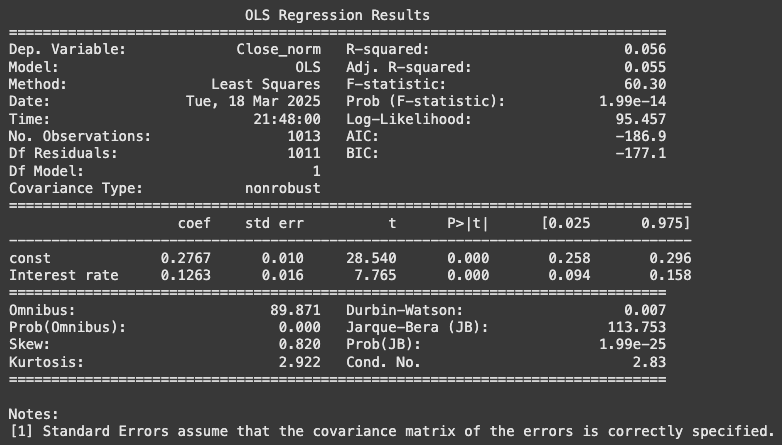
CSI 300 (China Stock Index)
| Metric | Value |
|---|---|
| R² | 0.006 |
| Adjusted R² | 0.005 |
| Coefficient | -0.0625 |
| p-value | 0.017 |
| Validated Hypothesis | Not yet (data limited, weak explanatory power) |
The univariate regression between the CSI 300 index and Bitcoin (normalized close) shows a very weak but statistically significant negative relationship, with a coefficient of -0.0625 and a p-value of 0.017.
This suggests that drops in the CSI 300 could coincide with minor upward moves in Bitcoin. However, the explanatory power of the model remains extremely low (R² = 0.6%), and the dataset for this variable starts only in 2021, limiting the reliability of the analysis.
Further investigation with lag structures and a multivariate model will be required to assess the true predictive power of this variable. At this stage, no robust conclusion can be drawn.
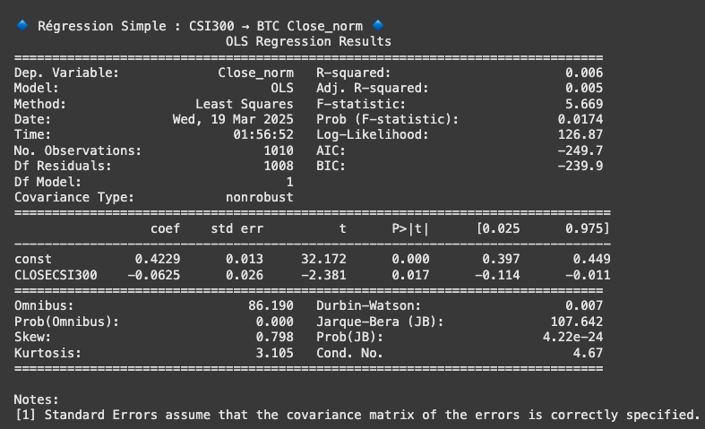
Difficulty (Mining)
| Metric | Value |
|---|---|
| R² | 0.489 |
| Adjusted R² | 0.489 |
| Coefficient | 0.5316 |
| p-value | < 0.001 |
| Validated Hypothesis | Yes ✅ |
Cette régression simple examine le lien entre la difficulté du minage de Bitcoin (difficulty) et le prix du Bitcoin (Close_norm). Le modèle révèle une corrélation positive significative, avec un coefficient de 0.5316 et un R² de 0.489, indiquant que près de 49% de la variance du prix du Bitcoin est expliquée par la difficulté.
Ce résultat soutient l’hypothèse selon laquelle une augmentation de la difficulté — reflet d’une intensification de l’activité sur le réseau et d’un engagement accru des mineurs — tend à accompagner ou précéder des hausses du prix du BTC.
Cette relation relativement forte, en comparaison des autres variables étudiées, suggère que la difficulty pourrait constituer un bon candidat pour être intégrée à un modèle prédictif. Une analyse complémentaire avec des lags pourrait affiner encore cette lecture.
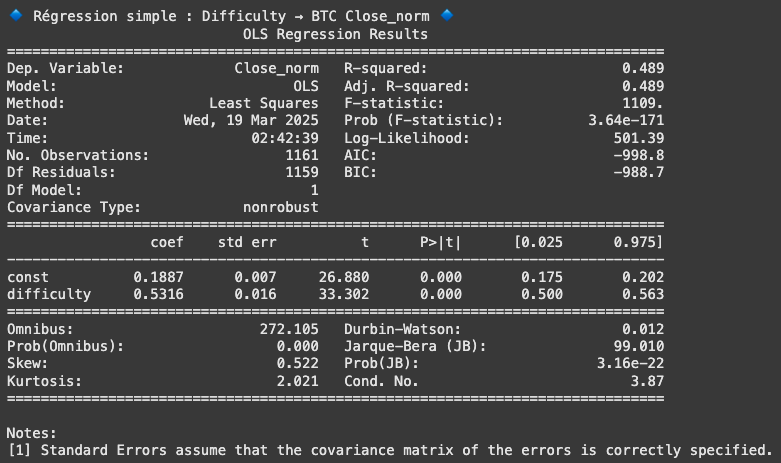
M2 Money Supply (USA)
| Metric | Value |
|---|---|
| R² | 0.238 |
| Adjusted R² | 0.237 |
| Coefficient | 0.5342 |
| p-value | < 0.001 |
| Validated Hypothesis | Yes |
The regression between the M2 money supply and Bitcoin's normalized price reveals a moderately strong and statistically significant relationship. With an R² of 23.8% and a positive coefficient (~0.53), the results suggest that Bitcoin is positively correlated with increases in M2.
This supports the idea that Bitcoin may benefit from expansionary monetary policies, which inject more liquidity into the system. However, M2 data was partially extrapolated for late periods, so this variable should be treated with caution and re-evaluated with lag structures during multivariate modeling.
Compared to interest rates (which showed a weaker and contradictory relationship), M2 appears to be a more structurally relevant predictor of Bitcoin price movements, possibly capturing broader liquidity effects.
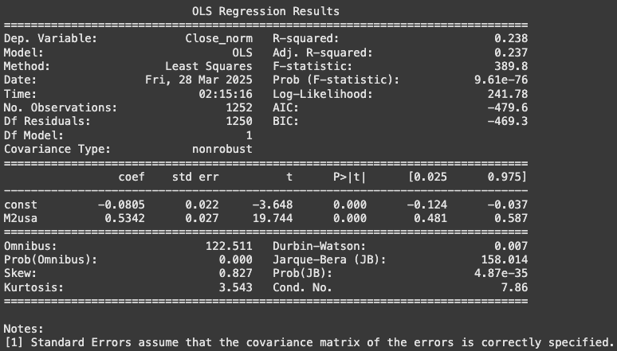
Volume (Bitcoin Transactions)
| Metric | Value |
|---|---|
| R² | 0.162 |
| Adjusted R² | 0.162 |
| Coefficient | 1.4861 |
| p-value | < 0.001 |
| Validated Hypothesis | Yes (significant) |
The simple regression between Bitcoin transaction volume and Close_norm reveals a statistically significant and moderately strong relationship, with an R² of 16.2%.
The positive coefficient suggests that higher trading activity is generally associated with higher Bitcoin prices, potentially reflecting investor interest or speculative momentum.
However, volume may also respond after price movements rather than anticipate them. Further analysis with lag structures will be necessary to clarify its predictive value in multivariate models.
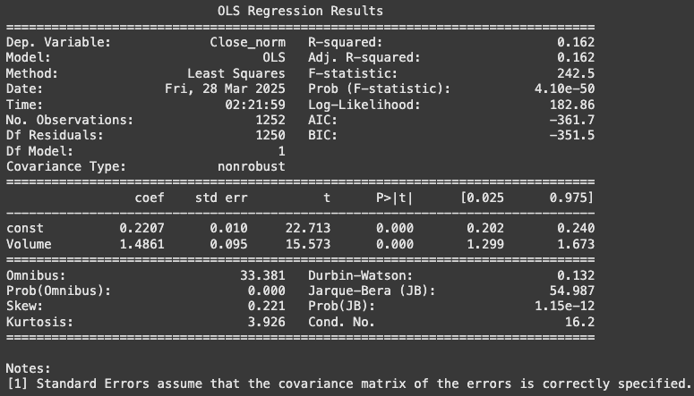
Volatility
| Metric | Value |
|---|---|
| R² | 0.001 |
| Adjusted R² | 0.000 |
| Coefficient | -0.0650 |
| p-value | 0.290 |
| Validated Hypothesis | No |
The univariate regression between Bitcoin's volatility and its normalized price shows no statistically significant relationship, with an R² near zero and a non-significant p-value (≈ 0.29). The slight negative coefficient is not meaningful in this context.
This result contradicts our initial hypothesis, which expected a clear link between volatility spikes and price movements. It suggests that the relationship may be nonlinear or involve lagged effects not captured in this simple regression.
Further exploration using lag structures or alternative modeling techniques will be necessary to assess the true role of volatility in Bitcoin pricing.
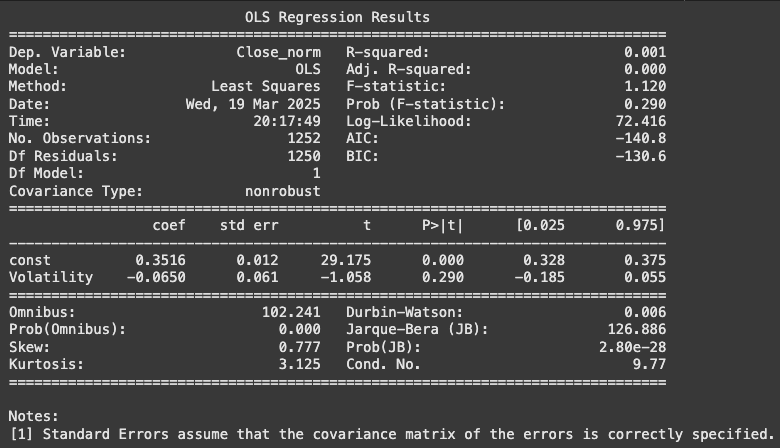
S&P500 - Trading Volume
| Metric | Value |
|---|---|
| R² | 0.038 |
| Adjusted R² | 0.037 |
| Coefficient | -0.3664 |
| p-value | < 0.001 |
| Validated Hypothesis | Partially (to confirm with lags) |
The univariate regression between S&P500 trading volume and Bitcoin's normalized price shows a statistically significant but weak negative relationship, with an R² of 3.8%.
The negative coefficient suggests a potential capital reallocation dynamic: during periods of increased activity on traditional markets, interest in Bitcoin might diminish. However, this remains a tentative interpretation given the limited explanatory power of the variable.
This result warrants further exploration with optimal lag testing to determine if the relationship persists over time or under specific market conditions.
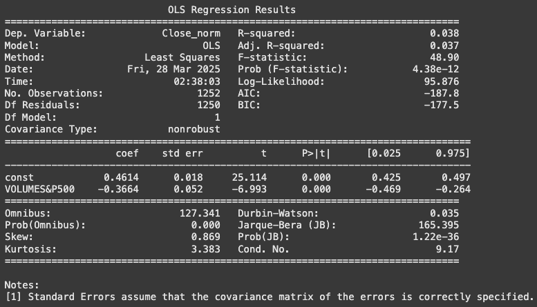
Global Conflicts (10+ deaths/day)
| Model | R² | Coefficient | p-value | Validated Hypothesis |
|---|---|---|---|---|
| Number of Conflicts | 0.219 | 0.0294 | < 0.001 | Yes |
| Total Fatalities | 0.109 | 0.0006 | < 0.001 | Partially |
| Both (Multivariate) | 0.219 | Conflicts: 0.0288 Fatalities: 0.000025 |
Conflicts: < 0.001 Fatalities: 0.715 |
Only conflict count |
The regression between the number of global conflicts (with more than 10 deaths/day) and Bitcoin's normalized price shows a statistically significant and relatively strong relationship, with R² = 21.9%. The positive coefficient suggests that periods with more geopolitical instability may coincide with upward movements in Bitcoin's price, possibly reflecting investor demand for alternative assets.
The total number of fatalities also shows a significant, though weaker, relationship (R² = 10.9%). However, in the combined model, only the conflict count remains statistically significant, confirming it as the more relevant explanatory variable.
These insights will need to be re-evaluated with lagged versions of the variables during the multivariate modeling phase, especially considering that conflict data was only available for part of the study period.
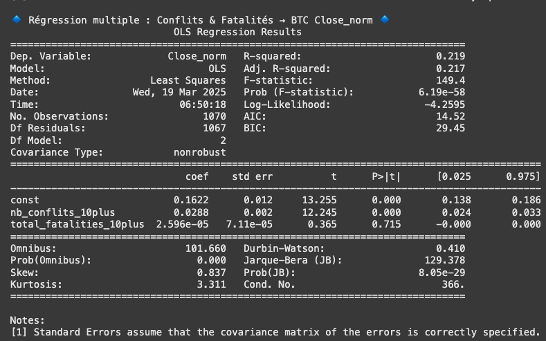
Aggregate Financing on Real Economy (China)
| Metric | Value |
|---|---|
| R² | 0.030 |
| Adjusted R² | 0.029 |
| Coefficient | -0.1791 |
| p-value | < 0.001 |
| Validated Hypothesis | Weak support (lag to test) |
The univariate regression between Aggregate Financing on the Real Economy in China and Bitcoin normalized price shows a statistically significant but weak inverse relationship, with an R² of 3%. This suggests that increases in aggregate financing are slightly associated with decreases in Bitcoin price.
However, caution is needed in interpretation. The variable is available only at a monthly frequency and has been applied to daily data, potentially reducing precision. Additionally, China’s complex regulatory stance toward Bitcoin might distort the economic link over time.
This variable should therefore be flagged for closer analysis during the multivariate phase, especially after recalculating optimal lags on unnormalized data.
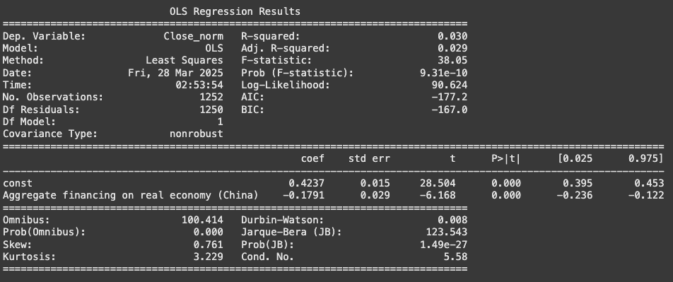
UNIVARIATE REGRESSIONS SUMMARY
| Variable | Hypothesis | Significance (p-value) | Explained Variance (R²) | Observations |
|---|---|---|---|---|
| S&P500 | ✅ Validated | < 0.001 | 0.750 | Strong, positive relationship confirming risk-on behavior |
| DXY | ⚠️ Partially | < 0.001 | 0.030 | Weak but significant; possible lagged inverse effect |
| BTC Dominance | ✅ Validated | < 0.001 | 0.553 | Positive relationship, strong explanatory power |
| Fear & Greed Index | ✅ Validated | < 0.001 | 0.107 | Behavioral indicator showing moderate correlation |
| GBTC | ⚠️ Partially | 0.043 | 0.003 | Weak direct effect, could capture institutional interest |
| Gold Price | ✅ Validated | < 0.001 | 0.592 | Strong positive relationship, may act as alternative store of value |
| Google Search | ✅ Validated | < 0.001 | 0.144 | Good potential for lead signal; strong behavioral correlation |
| NVT Ratio | ⚠️ Partially | < 0.001 | 0.025 | Significant but low explanatory power, non-linear effects likely |
| Interest Rate | ❌ Contradicted | < 0.001 | 0.056 | Unexpected positive relationship, lags needed |
| CSI 300 | ❌ Contradicted | 0.017 | 0.006 | Weak inverse correlation, to be confirmed with full dataset |
| Difficulty | ✅ Validated | < 0.001 | 0.489 | Strong correlation, linked to mining cycles and supply pressure |
| M2 USA | ✅ Validated | < 0.001 | 0.238 | Liquidity measure highly relevant, especially in expansion phases |
| Volume (BTC) | ✅ Validated | < 0.001 | 0.162 | Market activity correlates positively with price movement |
| Volatility (BTC) | ❌ Not validated | 0.290 | 0.001 | No direct correlation observed in unlagged regression |
| Volume S&P500 | ✅ Validated | < 0.001 | 0.038 | Inverse relation suggests BTC demand as alternative asset |
| Conflicts (Nb) | ✅ Validated | < 0.001 | 0.219 | Geopolitical instability shows positive impact on BTC |
| Fatalities | ✅ Validated | < 0.001 | 0.109 | Supports the idea of BTC as hedge during severe unrest |
| Aggregate Finance (China) | ✅ Validated | < 0.001 | 0.030 | Inverse correlation, to monitor carefully due to extrapolation |
Determine Optimal Time Lags
PIPELINE
To ensure rigorous lag selection for explanatory variables, we implemented a strict pipeline designed to calculate optimal lags using unnormalized data. This process prevents data leakage by shifting variables relative to the target before modeling. The pipeline follows four main steps:
- Lag Evaluation Function: Iteratively regress each variable at multiple lags (0, 30, 60, 90) against the Bitcoin closing price. The first 90 days are removed for consistency across variables.
- Display & Select Best Lags: We extract the best-performing lags (based on R²) for each variable using a summary table.
- Create Lagged Features: Variables are shifted using their optimal lag and added to a new DataFrame ready for modeling.
- Final Dataset: The output is a clean table with the target and all explanatory variables lagged optimally, ready for multivariate analysis.

| Variable | Lag | R² | Adjusted R² | p-value | Coefficient | Observations |
|---|---|---|---|---|---|---|
| CLOSES&P500 | 0 | 0.787 | 0.731 | < 0.001 | 27.6917 | 1163 |
| difficulty | 0 | 0.491 | 0.456 | < 0.001 | 5.36e-10 | 1163 |
| Volume | 0 | 0.182 | 0.169 | < 0.001 | 4.39e-07 | 1163 |
| Google_srch | 0 | 0.128 | 0.119 | < 0.001 | 623.2413 | 1163 |
| M2usa | 0 | 0.118 | 0.109 | < 0.001 | 9.4338 | 1163 |
| DXY | 0 | 0.025 | 0.023 | < 0.001 | 575.4708 | 1163 |
| NVT_Ratio | 0 | 0.008 | 0.008 | 0.002 | 819.2569 | 1163 |
| BTC_Dominance | 30 | 0.601 | 0.558 | < 0.001 | 2985.831 | 1163 |
| Fear_Greed_Index | 30 | 0.267 | 0.247 | < 0.001 | 434.9003 | 1163 |
| Gold_Price | 60 | 0.593 | 0.551 | < 0.001 | 68.9556 | 1163 |
| GBTC | 60 | 0.042 | 0.039 | < 0.001 | 0.0008 | 1163 |
| Interest rate | 90 | 0.210 | 0.195 | < 0.001 | 4307.927 | 1163 |
| CLOSECSI300 | 90 | 0.173 | 0.161 | < 0.001 | -15.8686 | 1163 |
| VOLUMES&P500 | 90 | 0.126 | 0.117 | < 0.001 | -7.73e-06 | 1163 |
| Aggregate financing on real economy (China) | 90 | 0.099 | 0.091 | < 0.001 | -0.5636 | 1163 |
| Volatility | 90 | 0.012 | 0.011 | < 0.001 | -145561.3 | 1163 |
The optimal lag analysis reveals that some variables exert an immediate influence on Bitcoin's price. Variables like CLOSES&P500, difficulty, and Volume all reach their highest explanatory power with a lag of 0 days, suggesting a near-instantaneous market reaction to these indicators.
Other factors, including BTC Dominance, Gold Price, and Fear & Greed Index, show better predictive power with short to mid-term lags (30 to 60 days), which likely reflects delayed market adaptation or indirect influence mechanisms. Notably, macroeconomic and structural indicators like Interest rate, CSI300, or Aggregate financing (China) tend to require longer lags (90 days) to reach their full effect.
Overall, the distribution of optimal lags appears economically coherent: technical or direct financial indicators react quickly, while sentiment or macro-financial variables exhibit delayed effects. This lag structure will guide us in constructing a more robust multivariate forecasting model.
Multivariate Regression
This section aims to validate the univariate findings by testing all explanatory variables together in a multivariate regression model. While the univariate regressions helped identify potential drivers of Bitcoin's price individually, it is crucial to assess whether these relationships hold when all variables are combined, and whether some lose their explanatory power due to interactions, redundancies, or multicollinearity.
During this process, several adjustments were made: many variables had their optimal lag revised, while some were entirely removed due to non-significant p-values in the multivariate framework. In other cases, lags were fine-tuned manually to maximize explanatory power without introducing bias. Additionally, structural spreads between key variables (e.g., BTC Dominance vs Close) were introduced to capture deeper relational effects. You can follow up the refining and tuning process in the Google Colab file attached at teh end of this section.
The objective here is not only to identify the most statistically robust combination of predictors, but also to prepare the ground for the next phase: predictive modeling using regularized methods (Ridge, Random Forest). The final model (v11) presented below integrates all these refinements and is evaluated with rigorous robustness tests.
NEWEY WEST OLS REGRESSION (HAC CORRECTED) ON V7
The multivariate regression V7 explores the influence of macroeconomic, market and sentiment variables on the price of Bitcoin, without using spread variables. This specification confirms several key univariate findings, while also revealing the specific contribution of each factor when controlling for the others.
The S&P500 has the strongest effect on Bitcoin, with a 1-point increase in the index associated with a $19.4 rise in BTC price. Other variables such as gold, interest rates, fear/greed index and monetary aggregates (M2) also show strong and significant effects. The dominance of BTC, while economically meaningful, remains only marginally significant in this specification.
Overall, this model reaches an adjusted R² of 93.4%, suggesting that the combined set of variables explains most of the variance in Bitcoin prices, even without spreads. This reinforces the relevance of a diversified and lag-adjusted explanatory framework for cryptoasset modeling.
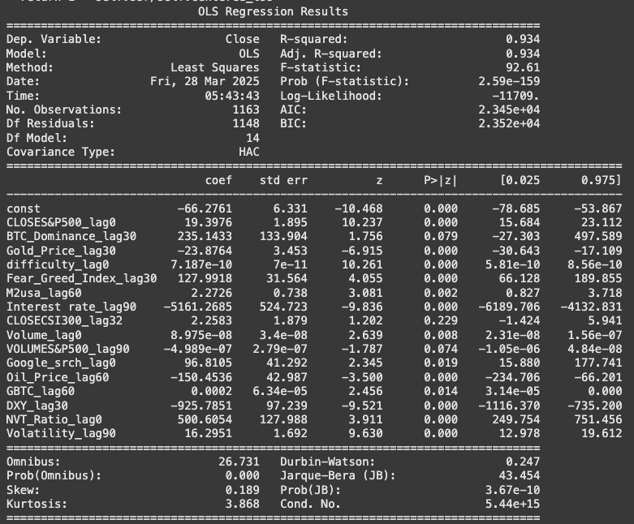
| Variable | Coefficient | p-value | Interpretation |
|---|---|---|---|
CLOSES&P500_lag0 |
+19.40 | < 0.001 | A 1-point increase in the S&P 500 index is associated with a $19.40 increase in Bitcoin price, highlighting Bitcoin’s short-term pro-cyclicality with traditional equity markets. |
BTC_Dominance_lag30 |
+235.14 | 0.079 | A 1% increase in BTC dominance (after 30 days) may result in a $235 rise in BTC, suggesting long-term market concentration correlates with future price strength. However, significance is marginal. |
Gold_Price_lag30 |
-23.88 | < 0.001 | A $1 increase in gold price (with 30-day lag) leads to a $23.88 drop in BTC, reinforcing an inverse relationship — potentially reflecting competition as alternative stores of value. |
difficulty_lag0 |
+7.19e-10 | < 0.001 | Mining difficulty has a direct structural effect on BTC price. As it rises, it reflects growing network security and miner confidence, positively impacting valuation. |
Fear_Greed_Index_lag30 |
+127.99 | < 0.001 | Each 1-point increase in sentiment index (30-day lag) boosts BTC by ~$128, capturing how sustained optimism can drive delayed price appreciation. |
M2usa_lag60 |
+2.27 | 0.002 | A $1 billion increase in M2 money supply (lagged 60 days) correlates with a $2.27 BTC gain, supporting the thesis of BTC as a hedge against liquidity expansion. |
Interest rate_lag90 |
-5161.27 | < 0.001 | A 1pp rise in interest rates reduces BTC by over $5,161 after 90 days, confirming delayed but strong pressure of monetary tightening on crypto assets. |
CLOSECSI300_lag32 |
+2.26 | 0.229 | Not statistically significant; the CSI300’s lagged influence on BTC remains inconclusive in this model. |
Volume_lag0 |
+8.98e-08 | 0.008 | Higher trading volume is associated with a slight increase in BTC, suggesting that investor engagement has modest short-term price implications. |
VOLUMES&P500_lag90 |
-4.99e-07 | 0.074 | Equity market volume (lag 90) is weakly negatively associated with BTC price, potentially hinting at capital rotation away from crypto during stock market activity peaks. |
Google_srch_lag0 |
+96.81 | 0.019 | A one-point increase in search interest results in a $96.8 increase in BTC price, indicating the asset’s sensitivity to attention and social visibility. |
Oil_Price_lag60 |
-150.45 | < 0.001 | Each $1 increase in oil price (lagged 60 days) reduces BTC by $150, possibly due to inflation pressure leading to tighter financial conditions. |
GBTC_lag60 |
+0.0002 | 0.014 | The coefficient is small but significant, showing a weak positive link between institutional demand (GBTC) and BTC price. |
DXY_lag30 |
-925.78 | < 0.001 | A 1-point rise in the USD index corresponds to a $926 BTC drop, illustrating BTC’s inverse correlation with dollar strength. |
NVT_Ratio_lag0 |
+500.61 | < 0.001 | A one-unit increase in NVT Ratio (valuation metric) is associated with a $500 BTC increase — surprising result, potentially explained by lag misalignment. |
Volatility_lag90 |
+16.30 | < 0.001 | Higher market volatility (lag 90) leads to a moderate $16.3 BTC increase, reflecting speculative momentum following turbulent periods. |
This regression confirms that Bitcoin is highly reactive to macro-financial dynamics, especially equity markets, interest rates, and liquidity metrics. It also reveals the importance of sentiment (Fear/Greed, Google Search) and crypto-specific fundamentals (dominance, difficulty). While this version omits spreads, it already captures over 93% of Bitcoin's price variance, making it a solid foundation before testing more advanced models.
ROBUSTNESS CHECKS V7
To ensure the reliability of our multivariate regression model (v7), we conducted a series of robustness tests assessing autocorrelation, heteroskedasticity, and multicollinearity. These diagnostic tools help validate the statistical soundness of the model and highlight potential structural weaknesses.
| Test | Result | p-value | Interpretation |
|---|---|---|---|
| Durbin-Watson | 0.247 | – | Strong positive autocorrelation |
| Breusch-Pagan LM Stat | 274.51 | < 0.001 | Heteroskedasticity detected |
| Breusch-Pagan F Stat | 25.33 | < 0.001 | Heteroskedasticity confirmed |
Autocorrelation:
The Durbin-Watson test returns a very low statistic (0.247), indicating strong positive autocorrelation in the residuals.
This may reflect temporal patterns that are poorly captured by the current model, or the omission of variables with persistent effects.
Heteroskedasticity:
The Breusch-Pagan test detects significant heteroskedasticity (p < 0.001). The model errors do not exhibit constant variance,
which could bias inference if left uncorrected. Fortunately, the regression was estimated using a HAC (Newey-West) robust covariance matrix, mitigating this issue.
Multicollinearity:
Variance Inflation Factor (VIF) analysis reveals serious collinearity concerns, particularly for difficulty,
BTC Dominance, and traditional macro-financial indicators such as M2 and Gold Price.
These redundancies between explanatory variables can reduce the stability of coefficient estimates and make interpretation more challenging in a multivariate framework.
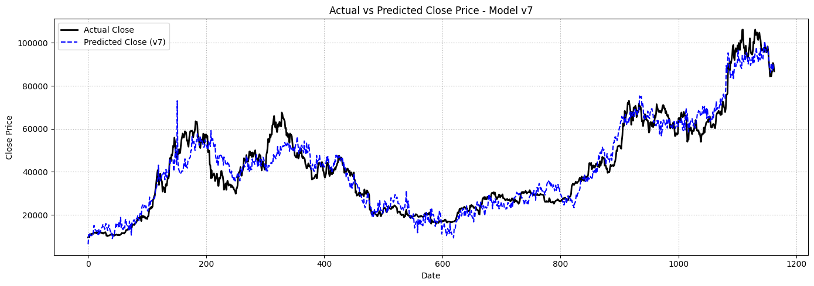
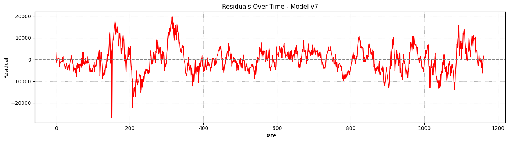
Visual Diagnostics:
The predicted values follow the actual Bitcoin close price very closely, with limited deviation over time.
However, the residual plot reveals patterns of clustering and periods of high amplitude, suggesting underlying volatility regimes
and reinforcing the presence of autocorrelation and heteroskedasticity.
Conclusion:
Model v7 demonstrates solid performance with a high explanatory power (R² = 93.4%) and statistically significant coefficients across most features.
The application of a HAC (Newey-West) covariance estimator further strengthens its robustness against heteroskedasticity and autocorrelation.
Nonetheless, diagnostics reveal critical weaknesses. The Durbin-Watson test confirms strong autocorrelation in the residuals,
and the Breusch-Pagan test indicates non-constant error variance — both of which could impact inference in the absence of correction.
Moreover, multicollinearity persists among core macro-financial indicators (e.g., difficulty, BTC Dominance), affecting the interpretability of coefficients.
Visually, the model tracks the Bitcoin price closely across time. However, residual plots highlight periods (notably around index points 200 and 350)
where large, clustered errors emerge. These correspond to episodes of sharp market movements, suggesting the model underperforms in high-volatility regimes.
In conclusion, while model v7 offers a strong baseline for multivariate explanation, its limitations justify the construction of a refined version (v11)
incorporating additional features, optimal lags, and interaction effects to better account for dynamic market behaviors and structural breaks.
Normality of Residuals – Model v7
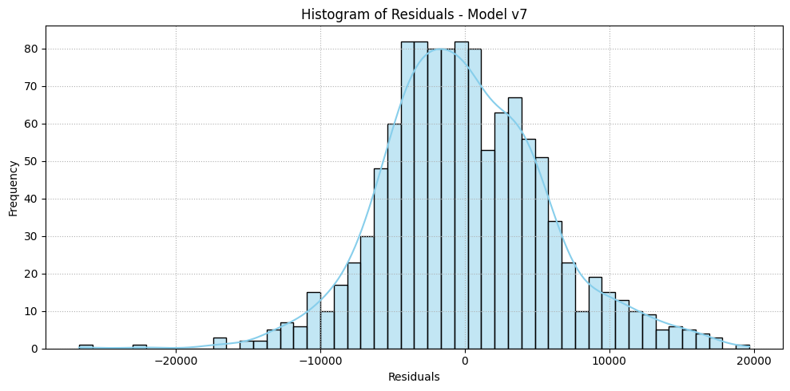
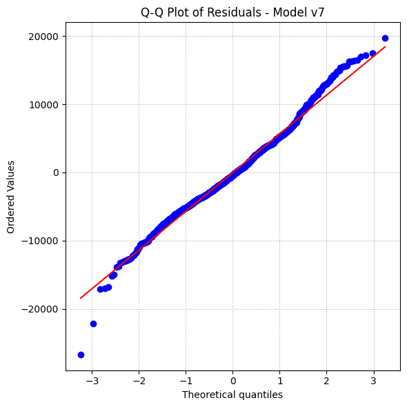
The residuals exhibit an approximately normal distribution, particularly in the central region which is enough for inference under a HAC-robust regression framework.
Some deviations appear in the tails, a common occurrence in financial time series due to volatility clustering and extreme movements.
These tail discrepancies are not alarming for the current analysis, but they should be acknowledged when performing inference procedures that rely strictly on normality assumptions.
NEWEY WEST OLS REGRESSION (HAC CORRECTED) ON V11
This version of the multivariate model introduces refined lags and includes spread variables to better capture the relative dynamics between Bitcoin and key market indicators. The inclusion of spreads helps isolate the "excess performance" of BTC compared to macroeconomic drivers, offering a more robust framework for price explanation.
Compared to model v7, several lags have been adjusted to improve significance in a multivariate context, and non-significant variables were removed. Additionally, spread features were added to measure the deviation between BTC and reference assets (e.g. gold, sentiment, volatility), which improves both interpretability and fit.
While this specification achieves a remarkable R² of 99%, suggesting excellent explanatory power, this performance should be interpreted with caution due to potential mechanical effects from spreads being derived from the target. Therefore, this model should be used for interpretation and feature selection, but not for pure prediction tasks without careful validation.
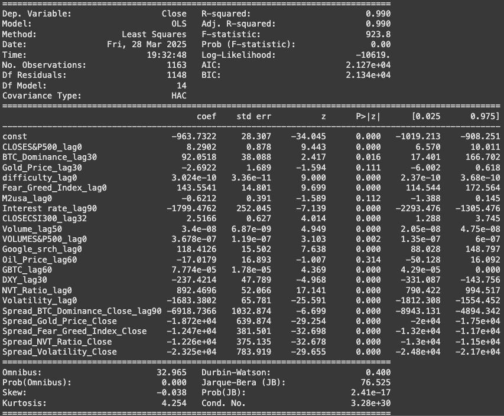
Below is a summary of the most impactful changes introduced in model v11. We focus on newly added spread variables and those whose coefficients changed significantly compared to v7.
| Variable | Coefficient | p-value | Interpretation |
|---|---|---|---|
CLOSES&P500_lag0 |
+8.29 | p < 0.001 | Still a positive effect, but significantly lower than in V7: Bitcoin price increases by ~$8.3 for every 1-point rise in the S&P500. This suggests that the influence is now shared with other variables in the model. |
BTC_Dominance_lag30 |
+92.05 | p = 0.016 | The effect remains positive and statistically significant. A 1% increase in BTC dominance leads to a $92 rise in Bitcoin price after 30 days (confirming its relevance when market concentration persists). |
Fear_Greed_Index_lag0 |
+143.55 | p < 0.001 | The sentiment index remains highly influential. Each 1-point increase leads to a $143.5 rise in BTC, reinforcing the role of market optimism in short-term price dynamics. |
Gold_Price_lag30 |
-2.69 | p = 0.111 | Formerly significant, gold’s influence becomes negligible here. Its p-value exceeds 0.1 and the inverse effect on Bitcoin is no longer confirmed. |
M2usa_lag0 |
-0.62 | p = 0.112 | The coefficient becomes negative and non-significant. This suggests that the liquidity signal is now better captured by other variables and spread interactions. |
Interest rate_lag90 |
-1799.48 | p < 0.001 | Still strongly negative: a 1point rise in interest rates reduces BTC by ~$1800 after 90 days. A core macroeconomic driver, robust to the inclusion of spreads. |
Google_srch_lag0 |
+118.41 | p < 0.001 | The influence of online attention increases in V11: a 1-point gain in search index now boosts BTC by $118, underscoring the role of visibility and retail sentiment. |
Oil_Price_lag60 |
-17.02 | p = 0.314 | The variable becomes clearly non-significant (p > 0.3), with a weak negative coefficient. Oil price no longer contributes meaningfully in this specification. |
| Variable | Coefficient | p-value | Interpretation |
|---|---|---|---|
Spread_BTC_Dominance_Close_lag90 |
-6918.74 | p < 0.001 | This spread captures a structural deviation between BTC dominance and its price. When dominance increases but price lags behind, the model anticipates a correction, here, a $6918 decrease in BTC for 1 point of disconnection. |
Spread_Gold_Price_Close |
-18720.00 | p < 0.001 | Very large negative effect. A $1 divergence between gold and BTC returns is associated with an average BTC correction of $18,720, highlighting competitive dynamics between the two assets. |
Spread_Fear_Greed_Index_Close |
-12470.00 | p < 0.001 | Strongly significant: a 1-point excess in Fear & Greed index relative to BTC price is followed by a drop of over $12,470 (suggesting short-term over-optimism is penalized in subsequent corrections). |
Spread_NVT_Ratio_Close |
-12260.00 | p < 0.001 | Each unit of excess in NVT ratio not reflected in BTC price leads to a strong negative adjustment. Indicates speculative overvaluation corrected by markets. |
Spread_Volatility_Close |
-23250.00 | p < 0.001 | Largest effect: when volatility rises but BTC price does not react, the model anticipates a major downward correction (~$23,250). Reflects regime shifts and delayed market reactions. |
Model v11 integrates additional features (spreads and lag adjustments) that improve interpretability and performance. It confirms the importance of relative positioning of Bitcoin versus traditional assets and sentiment metrics. However, spreads derived from the dependent variable may inflate explanatory power if not used carefully.
Overall, v11 offers a refined and theoretically coherent model structure. Still, it should be complemented with predictive performance tests and out-of-sample validation to confirm its generalizability, especially in volatile market regimes.
ROBUSTNESS CHECKS V11
Breusch-Pagan, Durbin-Watson and VIF Tests
| Test | Statistic | p-value | Interpretation |
|---|---|---|---|
| Durbin-Watson | 0.400 | – | Strong positive autocorrelation |
| Breusch-Pagan LM Stat | 111.53 | < 0.001 | Heteroskedasticity detected |
| Breusch-Pagan F Stat | 8.70 | < 0.001 | Heteroskedasticity confirmed |
Autocorrelation:
The Durbin-Watson test returns a very low statistic (0.400), indicating strong positive autocorrelation in the residuals. While the predicted values follow the actual BTC prices closely, this result suggests persistent time-dependent structures not fully captured by the explanatory variables.
Heteroskedasticity:
The Breusch-Pagan test confirms the presence of significant heteroskedasticity (p < 0.001). This reinforces the importance of using HAC robust standard errors, which were already applied to this model to mitigate the potential bias in inference.
Multicollinearity:
VIF values are elevated for several predictors, especially for Spread_NVT_Ratio_Close, difficulty, and Fear_Greed_Index. These results highlight redundancy between features, which could affect the precision and reliability of individual coefficients. While not invalidating the model, it emphasizes the need for careful interpretation.
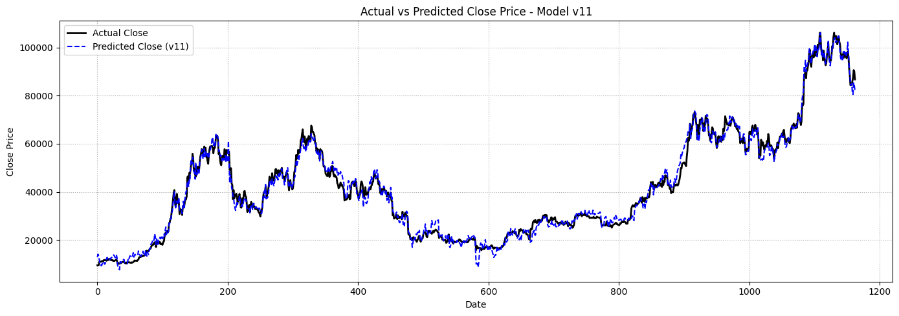
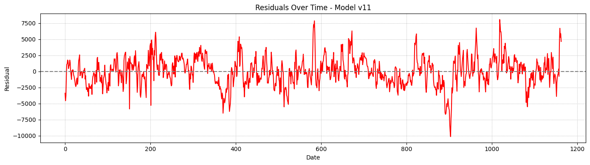
Visual Diagnostics:
The predicted values from model v11 follow the actual Bitcoin closing price very closely, with minimal divergence throughout the observed period.
This suggests a strong in-sample fit and improved responsiveness to price fluctuations compared to model v7.
The residuals are notably tighter and exhibit fewer clustered deviations, especially during periods of high volatility.
Compared to v7, where residuals showed more pronounced autocorrelation and large spikes during high-volatility phases,
model v11 demonstrates better stability and smoother adjustment.
While some residual spikes remain (e.g., around index 600 and 1050), they are of lower magnitude and less frequent.
This confirms the added value of spread variables and refined lag structures in capturing short-term dislocations.
Residual Normality Tests
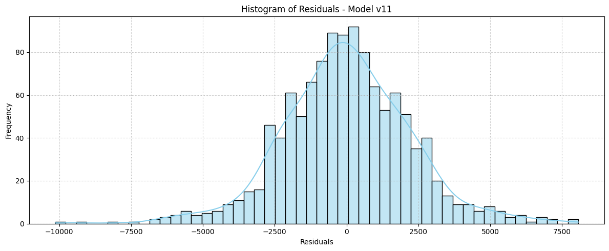
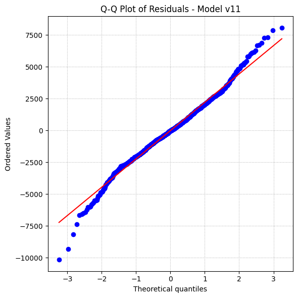
The residual normality is generally respected in model v11. The histogram displays a bell-shaped and centered distribution, with density well concentrated around zero. The Q-Q plot confirms this trend: most points align closely with the theoretical line, indicating a good Gaussian approximation, especially in the central range where most observations are located.
As observed in model v7, slight deviations appear at the distribution's tails, suggesting mild leptokurtosis (i.e., more extreme values than under normality). This implies that a few outliers are less well captured. However, these deviations remain acceptable within the framework of a model estimated using HAC covariance, which specifically adjusts for such non-standard residual behavior.
Compared to v7, the residual distribution in v11 appears slightly more regular and symmetric overall, confirming a more stable fit and improved model robustness.
FINAL COMPARISON: MODEL V7 vs MODEL V11
Both multivariate regressions present strong explanatory power. Model v7 achieves an adjusted R² of 93.4% using macro-financial and sentiment indicators, without any spread-based features. In contrast, model v11 reaches an impressive 99.0% adjusted R² by integrating spread variables and more precisely tuned lags.
While v11 outperforms v7 in terms of raw fit, part of this performance could be mechanical, as the spreads are derived from the target variable (Close). This raises concerns regarding overfitting and emphasizes the importance of robustness checks and predictive validation.
| Criteria | Model V7 | Model V11 |
|---|---|---|
| Adjusted R² | 93.4% | 99.0% |
| Number of Variables | 17 | 21 |
| Includes Spread Variables | No | Yes |
| Statistical Robustness | Some weaknesses (autocorr., heterosked.) | Greater stability |
| Residual Distribution | Skewed with extreme values | More centered and symmetric |
| Interpretability | Simpler to explain | More complex (spreads) |
| Predictive Potential (RF, Ridge) | Good base, but limited flexibility | Stronger base for trend-based feature engineering |
To prepare for the next phase ( predictive modeling using Ridge regression and Random Forest ) we select a structurally sound, flexible, and interpretable specification.
Model v11 is chosen as the reference base due to:
- Its ability to capture relative dynamics (via spreads) between Bitcoin and explanatory factors.
- Improved fit and residual regularity.
- Better compatibility with trend-based variables and lagged interactions.
However, to avoid potential overfitting:
- Spread variables will be tested carefully in predictive scenarios.
- Strict train/test segmentation will be used for validation.
This approach ensures we benefit from the explanatory richness of v11 without compromising predictive reliability.
Predictions
INTRODUCTION TO MACHINE LEARNING PREDICTIONS
After building a robust analytical foundation through classical econometric regressions (OLS) and careful variable selection, this section marks a turning point in the project: the experimentation of supervised machine learning models to predict Bitcoin price dynamics.
This is my first in-depth implementation of predictive algorithms in a real-world financial context, aiming to test their relevance for anticipating BTC movements. Rather than focusing solely on final outcomes, I made the choice to document the entire thought process (including inconclusive attempts and progressive adjustments) as part of my learning journey.
This transparency highlights:
- the limitations of certain models (e.g., contemporaneous regression with leakage risks),
- how I identified and mitigated data leakage,
- and the gradual construction of a hybrid strategy blending probabilistic ML with interpretable market logic.
Ultimately, the goal here is not brute performance, but to demonstrate the ability to build a rigorous, flexible, and interpretable strategy, aligned with the standards of modern quantitative analysis.
RIDGE REGRESSION ON BTC CLOSE PRICE (t)
This initial Ridge model aimed to explain the current price of Bitcoin (Close_t) using contemporary macroeconomic and crypto-financial indicators (including spread variables constructed from the same target). While the model achieved an extremely high R² (>98%), it suffers from serious methodological flaws:
- High risk of data leakage: Many variables (e.g., spreads) were derived directly from the target variable.
- No temporal causality: All variables are contemporaneous (T), so this model cannot be used for real predictive tasks.
- Over-optimistic performance: Even with a valid train/test split, the setup inflates metrics due to construction bias.
Despite these flaws, this step played a key role in shaping the project's methodology. It helped identify core variables and confirmed the necessity of lagged, forward-looking designs for proper ML forecasting.
Variables used (df_ridge_v2)
| Variable | Description / Justification |
|---|---|
| CLOSES&P500_lag0 | Market performance (confirmed significant in OLS) |
| BTC_Dominance_lag30 | Reflects crypto market leadership (positive effect) |
| Gold_Price_lag30 | Safe haven comparison (non-significant in V11) |
| difficulty_lag0 | Mining cost baseline (minor effect) |
| Fear_Greed_Index_lag30 | Sentiment indicator (strong positive effect) |
| M2usa_lag60 | Liquidity driver (mixed results) |
| Interest rate_lag90 | Macroeconomic pressure (clearly negative) |
| Google_srch_lag0 | Retail attention (highly influential) |
| Spread_*_Close | Relative deviation from BTC (can bias the fit) |
| Momentum / MA / STD / MACD | Trend-based technical indicators |
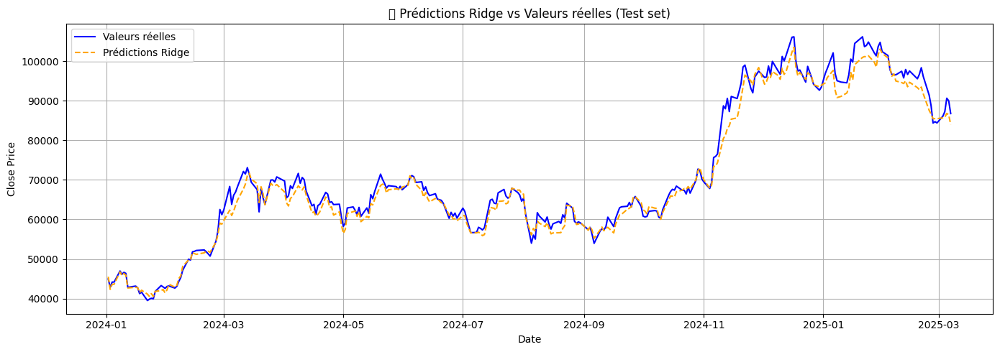
A revised version (df_ridge_v5) was also tested with fewer variables, removing some spreads and multicollinear features. Despite a slight drop in performance, the same core limitations persisted.
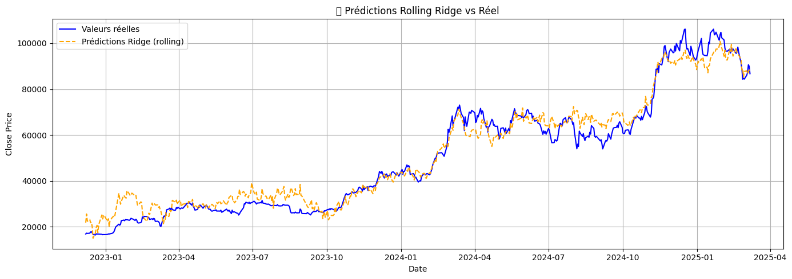
This attempt was useful as a methodological checkpoint but does not provide any realistic predictive power. It helped clarify the importance of variable construction and justified our shift toward models predicting the change in BTC price (e.g., ΔCloset+1) using only lagged features.
RIDGE SUR ΔCLOSE (t+1)
As a first predictive step, we attempted to model the variation in Bitcoin price one day ahead (ΔCloset+1) using Ridge Regression. This marks a shift from explanatory modeling to true forecasting, based only on features available at time t.
We created five distinct datasets (A to E), each progressively enriched with macroeconomic lags, sentiment indicators, spread-based variables, and technical signals (e.g., moving averages, MACD, RSI). All spreads were computed at time t to avoid any data leakage.
Features used per dataset
| Dataset | Features Summary |
|---|---|
| Jeu A | Macroeconomic + sentiment (lags only) |
| Jeu B | A + Spread variables |
| Jeu C | A + Trend indicators (MA, STD, Momentum) |
| Jeu D | C + RSI, MACD, Signal |
| Jeu E | B + C + D (full feature set) |
Ridge Regression – Performance on ΔCloset+1
| Dataset | MAE | RMSE | R² | Comment |
|---|---|---|---|---|
| Jeu A | 2151.79 | 2936.50 | -0.5515 | Baseline macro/sentiment only |
| Jeu B | 1845.71 | 2574.83 | -0.1929 | + Spread variables |
| Jeu C | 2601.10 | 3418.37 | -0.9582 | + Basic trend indicators |
| Jeu D | 2712.33 | 3520.77 | -1.0773 | + RSI, MACD, signals |
| Jeu E | 2961.10 | 3804.88 | -1.4261 | All features combined |
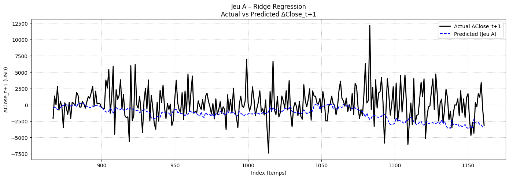
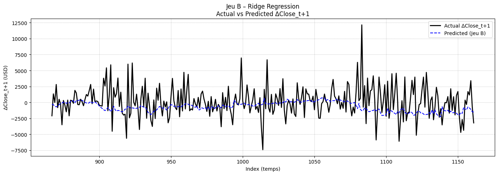
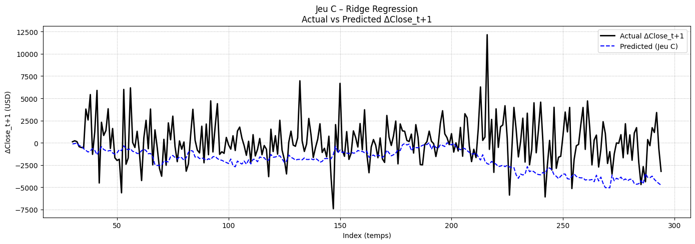
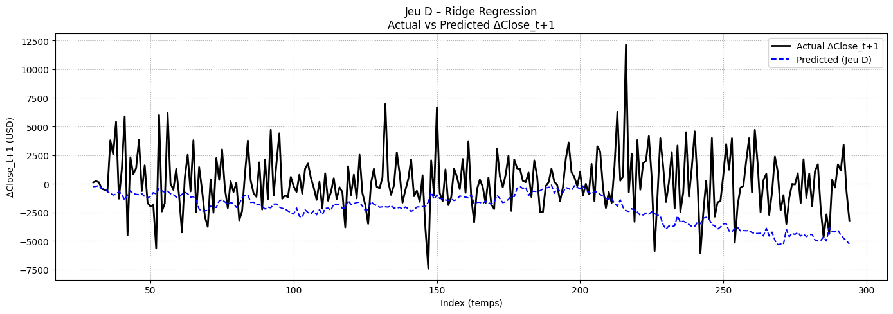
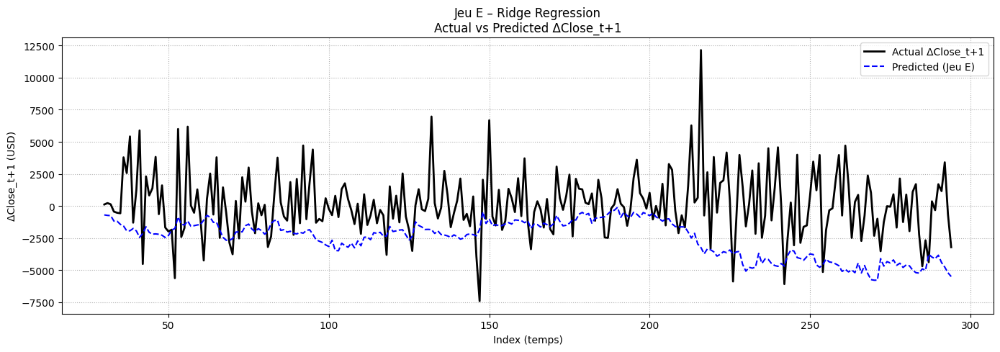
Across all datasets, Ridge regression failed to produce a meaningful predictive model for ΔCloset+1. All R² scores are negative, indicating the model performs worse than a simple mean predictor. This confirms the inherent challenge of predicting raw price changes in Bitcoin, due to its high volatility and low signal-to-noise ratio.
Despite this, the process provided key learnings regarding feature interactions and model sensitivity. It also reinforces the importance of exploring non-linear methods and alternative targets such as directional prediction.
RANDOM FOREST ON ΔCLOSE (t+1)
The Random Forest model was tested as a more flexible alternative to Ridge regression for predicting the future variation of Bitcoin price (ΔCloset+1). Due to the asset’s extreme volatility, this task represents a classic challenge in financial data science. The goal here is not to predict exact values, but to build a robust model capable of adapting to the noisy, nonlinear dynamics of the crypto market.
Several dataset versions were constructed to test the incremental addition of features: starting with all contemporaneous variables, then transitioning to lagged versions with or without trend indicators.
Dataset Versions – Structure & Features
| Version | Description |
|---|---|
| V1 | Base model with all available features, including spreads. |
| V3 | Lagged version. |
| V4 | V3 enriched with basic trend indicators (moving averages, volatility, momentum). |
| V5 | V4 extended with advanced technical indicators (RSI, MACD). |
Below are the results of each Random Forest version, including performance metrics and prediction graphs.
Performance Summary – Random Forest on ΔCloset+1
| Version | Description | MAE (USD) | RMSE (USD) | R² |
|---|---|---|---|---|
| V1 | All variables (w/ non-lagged spreads) | 1815.56 | 2456.48 | -0.0857 |
| V3 | Lagged spreads + normalized macro features | 1827.15 | 2418.27 | -0.0522 |
| V4 | V3 + basic trend indicators (MA, STD, Momentum) | 1911.57 | 2600.44 | -0.1332 |
| V5 | V4 + advanced technicals (RSI, MACD...) | 1990.03 | 2700.90 | -0.2225 |
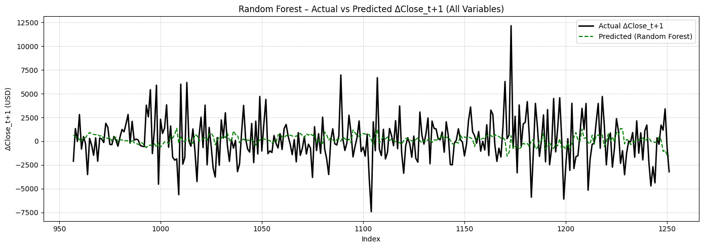
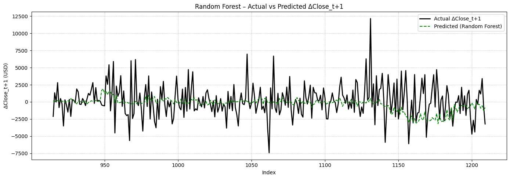
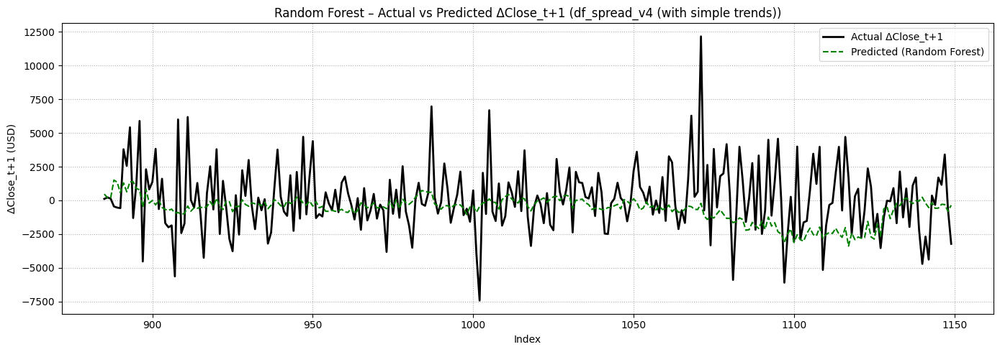
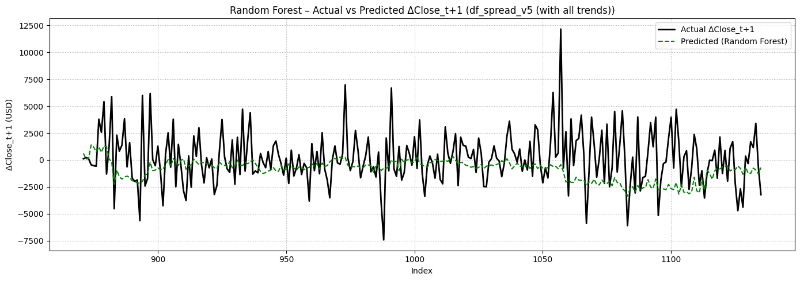
Despite Bitcoin’s high volatility, Random Forest models proved generally more effective than Ridge regressions across all tested scenarios. Their ability to handle nonlinear relationships and incorporate a large number of variables without excessive multicollinearity makes them a solid option for financial forecasting tasks.
To evaluate their robustness, we developed four successive dataset versions, ranging from a configuration including all t or (t0) features (V1) to stricter lagged setups enriched with trend indicators, both basic and advanced (V4 and V5). The spreads used, although derived from the Close variable, were constructed using values available at time T. They are therefore suitable for forecasting ΔCloset+1 without introducing any information leakage.
The performance results show that V3 offers the best methodological compromise. It achieves:
- The lowest RMSE among rigorous versions,
- The R² closest to zero (indicating lower residual variance),
- And a more stable architecture under extreme market movements.
In summary, V3 stands out as the most robust and interpretable configuration for real-world or out-of-sample applications. Yet, even with this setup, the predictive performance remains limited: all models show negative R² values, meaning they fail to outperform a naive baseline. This underlines the inherent difficulty of predicting short-term price variations for a highly volatile asset like Bitcoin.
For this reason, the next part of our analysis will explore alternative prediction targets (including directional classification of price movement (bullish vs. bearish) and horizon extensions (e.g., ΔCloset+3 or ΔCloset+7)) to better align with real-world strategy design.
CLASSIFICATION: PREDICTING DIRECTION (t+1)
Given the challenges observed with direct regression on Bitcoin price variations (ΔCloset+1), a more pragmatic approach consists in predicting only the direction of the movement: will the price go up or down the next day?
This binary classification task (bullish vs. bearish) better reflects real-world trading decisions and is more tolerant to noise. Several model versions were tested using a Random Forest classifier, with or without optimal lag transformation and class balancing via SMOTE.
Performance Summary – Random Forest Classification (t+1)
| Version | Description | Accuracy | Recall (Class 1) | ROC AUC | Comment |
|---|---|---|---|---|---|
| 1. Regular | All features, no lag, no balancing | 0.516 | 0.05 | 0.5156 | Predicts mostly class 0 – overfitting |
| 2. Regular + SMOTE | Same as above + balanced classes | 0.510 | 0.48 | 0.5146 | More balanced but no real gain |
| 3. Lagged | Lag-optimized variables (logit R²) | 0.550 | 0.67 | 0.5381 | Best recall and ROC AUC ✅ |
| 4. Lagged + SMOTE | Lagged setup + class rebalancing | 0.530 | 0.57 | 0.5179 | Performance drop with SMOTE ❌ |
Among the four tested models, Version 3 (Lagged) stands out with the best recall on bullish days (0.67) and the highest ROC AUC (0.5381). This confirms the added value of individual lag optimization in capturing early signals in macro and crypto indicators.
Conversely, SMOTE-based balancing methods, although sometimes helpful in highly imbalanced settings, appeared inefficient or even detrimental in this context. This may be due to the low class imbalance (~52/48) and the distortion SMOTE introduces in temporal data.
Overall, these findings suggest that the asymmetric dynamics of Bitcoin (e.g., sharp bullish recoveries) can be better detected using lags rather than rebalancing strategies.
In conclusion, predicting short-term direction at t+1 remains difficult, but some promising signals emerge from a lag-based approach. The signal, however, remains weak and noisy – especially for next-day movement – suggesting the need to explore:
- Longer prediction horizons such as t+3 or t+7, where short-term noise may smooth out,
- Other model families such as boosting or neural networks, better suited for capturing nonlinear patterns.
RANDOM FOREST ON BITCOIN DIRECTION (T+7)
After observing limited predictive performance at horizon T+1, we extended our directional classification approach to a weekly timeframe: T+7. The objective was to determine whether macro-financial signals, volatility indicators, and trend measures gain relevance over a slightly longer period.
This experiment also tests whether lagged features—individually optimized per variable—help reveal delayed causal relationships that are difficult to detect at shorter horizons.
Tested Dataset Versions
| Version | Description |
|---|---|
| Base | Raw contemporaneous variables (no lag) |
| Lagged | Features shifted with optimal lags (0–45 days) |
| Lagged Norm | Lagged features with post-split standardization |
Performance Comparison – Random Forest on Direction T+7
| Version | Accuracy | ROC AUC | F1-score (Bullish) | Comment |
|---|---|---|---|---|
| Base | 0.4236 | 0.4119 | 0.34 | Close to random |
| Lagged | 0.5941 | 0.5872 | 0.66 | Strongest recall on bullish phases |
| Lagged Norm | 0.5971 | 0.5915 | 0.65 | Very similar – no clear benefit from normalization |
Results show that the use of lagged variables significantly improves model performance compared to the raw (T) version. The lagged model achieves a stable prediction quality, with strong recall on upward trends and no need for SMOTE-based resampling.
The presence of a few lag-0 variables (e.g., BTC_Dominance_lag0, difficulty_lag0) does not appear to compromise generalization, as they are not among the most important features. Temporal dynamics are well distributed across lags and variable types.
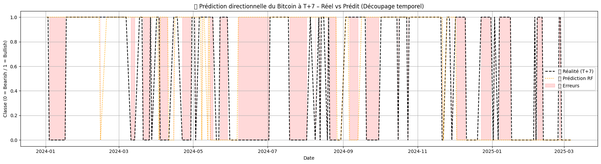
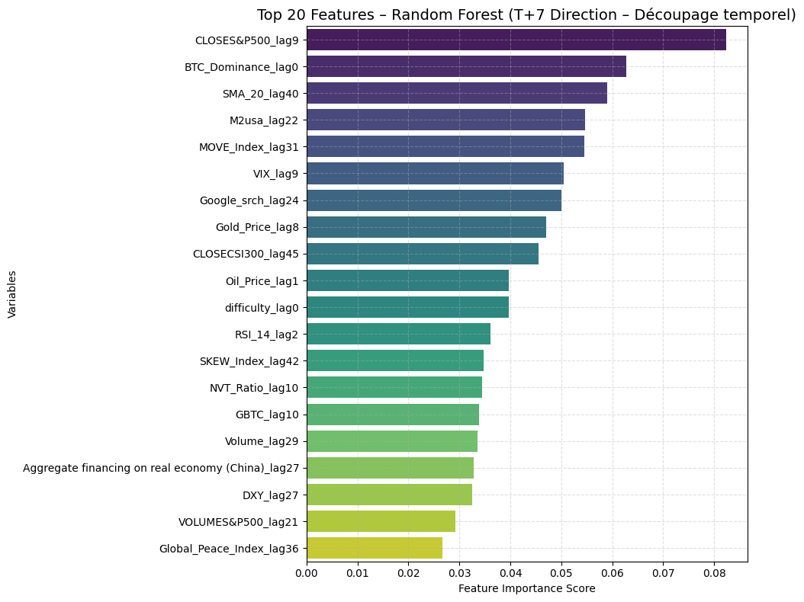
The top-ranked features reflect the relevance of trend indicators (SMA_20_lag40), macro factors (M2usa_lag22, Interest_rate_lag35), equity markets (CLOSES&P500_lag9), and crypto-specific indicators such as BTC_Dominance_lag0 and Google_srch_lag24.
Overall, the lagged model at T+7 shows meaningful predictive value, with accuracy approaching 60% and a ROC AUC near 0.59. These results suggest that incorporating temporal dynamics improves the model’s robustness, while maintaining interpretability.
This confirms the hypothesis introduced in the previous section: lag selection outperforms SMOTE rebalancing when directional signal quality is sufficient.
In the next step, we will use a XGBoost classifier model to see if it improves performance.
XGBOOST – PREDICTION OF BTC DIRECTION (T+7)
After testing logistic regression and Random Forest to predict the future direction of Bitcoin (target_direction_t7), we explored a third model: XGBoost. Known for its robustness in noisy environments like financial markets, XGBoost offers gradient boosting with regularization.
The goal is to determine whether XGBoost can outperform previous models when trained on lag-optimized variables, with advanced hyperparameter tuning via GridSearchCV.
Dataset – Structure
| Dataset | Description |
|---|---|
df_model_t7_lagged |
Lagged macroeconomic and technical indicators, selected based on pseudo-R² from logistic regression against target_direction_t7. |
Performance Comparison
| Model | Accuracy | ROC AUC | F1-score (Bullish) |
|---|---|---|---|
| Random Forest (No Lag) | 0.4236 | 0.4367 | 0.34 |
| Random Forest (Lagged) | 0.5941 | 0.5872 | 0.66 |
| XGBoost (Lagged + Tuned) | 0.6089 | 0.7013 | 0.71 |
Evolution – XGBoost
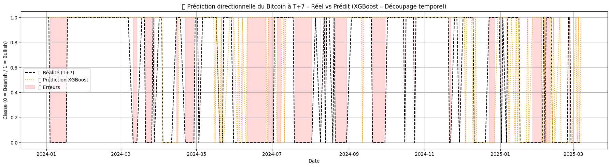
Top Features – XGBoost
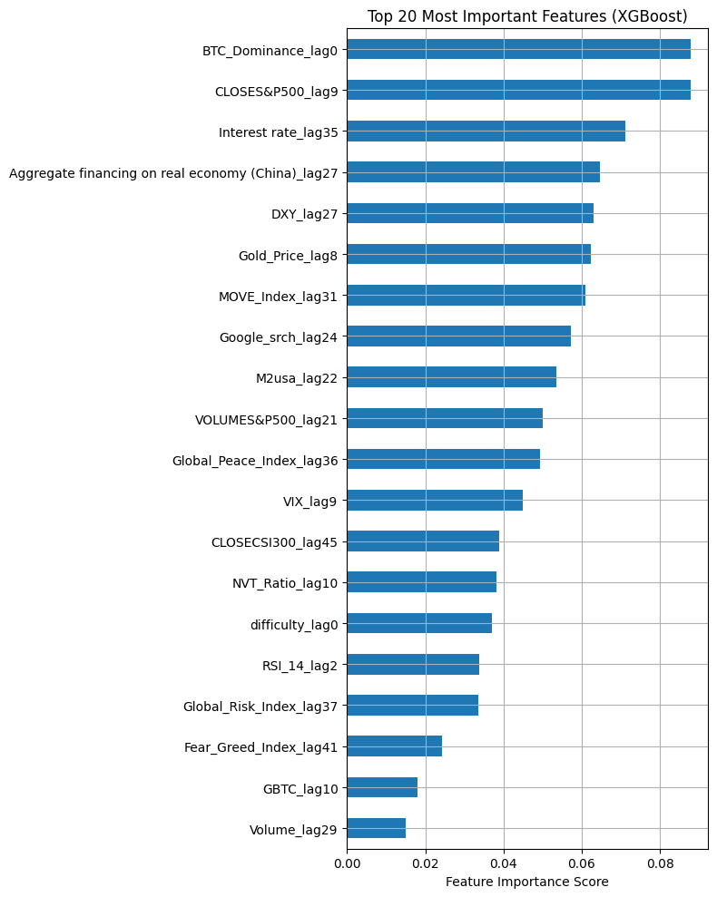
The XGBoost model confirms the added value of optimal lag structures. The most important variables include macroeconomic (e.g., M2, VIX, GBTC) and technical indicators (SMA, RSI), all derived from historical values.
This demonstrates that even in highly volatile environments like Bitcoin, it is possible to extract meaningful predictive signals over a 7-day horizon when the feature engineering is well-structured.
The high recall and F1-score for the bullish class suggest the model is capable of detecting upward trends with reasonable reliability. While XGBoost shows clear improvements over Random Forest in this setting, it is also computationally more intensive.
Although the optimized XGBoost model delivers overall better performance than Random Forest, the results must be interpreted with caution. A closer look at the confusion matrix reveals a clear imbalance in predictive power across classes.
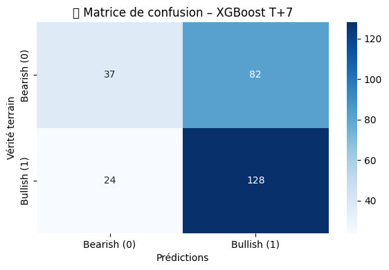
The model performs well in detecting bullish signals (class 1), with a high recall of 84%. However, it significantly underperforms in identifying bearish signals (class 0), reaching only 31% recall. This limitation is important, especially when the strategy aims to anticipate corrections or downturns.
This bias is not unexpected. The Bitcoin market is structurally bullish over long timeframes, which leads to a statistical overrepresentation of class 1 in the training data. As a result, the model naturally tends to favor bullish classifications, which may explain its weakness on bearish periods.
To address this asymmetry and improve real-world usability, several options can be considered:
- Implement a probabilistic decision threshold (e.g., enter a bullish position only if
p(bullish) > 0.70). - Combine ML classification models & manual hedge variables (for bearish movements).
- Build a dedicated bearish model that specializes in anticipating downside risks.
In summary, XGBoost is a strong and flexible model, but its current implementation remains biased toward bullish predictions. This makes it a suitable candidate for long-biased strategies but a limited tool for short-selling or bearish detection unless reinforced with further calibration.
Hybrid Strategies & Stacking
HYBRID STRATEGIES – TOWARD A DYNAMIC ALLOCATION LOGIC
After validating the predictive relevance of the XGBoost model on the T+7 horizon, we aimed to move beyond pure prediction and toward a logic of real investment strategy allocation.
In other words, the objective was no longer simply to forecast the future direction of Bitcoin's price, but to apply these signals in a concrete strategic framework:
- When to enter a long position (CALL)?
- When to stay neutral (hedge)?
- When to attempt a short position?
This gave rise to the next phase of the project: the design of hybrid strategies, combining multiple models (XGBoost, Logistic Regression, Random Forest) to distinguish between bullish, neutral, and bearish phases.
These strategies rely primarily on the predicted probabilities of upward or downward movement rather than binary outputs, allowing for greater flexibility and responsiveness in decision-making. The models does not act as an oracle, it gives investments recommandations based on probabilies of succes of the underlying model to predict bullish and bearish movements. We will also build hybrid strategies based on both ML classification models and macroeconomic indicators (S&P500, Interest rate or BTC_dominance) that we will parameter manually.
HYBRID STRATEGIES ON T+1 & TAVG3
Before fully focusing on the weekly horizon (T+7), we experimented with shorter-term signals using T+1 (next-day variation) and TAVG3 (average of 3-day price changes). These preliminary strategies aimed to test whether early bullish signals could be exploited profitably in highly volatile markets like Bitcoin.
The approach was straightforward: use a classification model to estimate the probability of a bullish move, and enter a CALL position only if this probability exceeded a given threshold. This probabilistic framework ensures fewer, more selective decisions, rather than a continuous exposure to market fluctuations.
Results on T+1 (LogReg strategy, p > 0.80)
Despite a promising accuracy of 58.16% on the days the model took action, the strategy performed poorly compared to a passive Buy & Hold benchmark:
Model Strategy: +4 813.87 USD
Buy & Hold BTC: +45 003.76 USD
The model rarely triggered trades, and its conservative stance led to insufficient exposure during bullish periods.
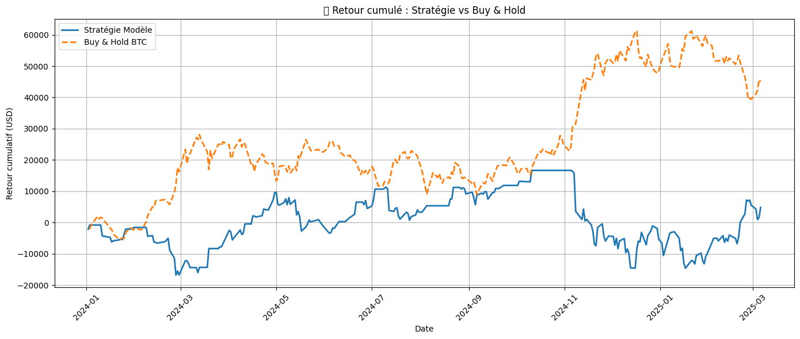
Results on TAVG3 (LogReg strategy, p > 0.70)
The 3-day average horizon reduced some of the daily noise and led to improved (but still limited) performance:
Model Strategy: +11 377.68 USD
Buy & Hold BTC: +89 375.09 USD
The strategy remained highly selective, issuing few signals, which limited its cumulative return despite correct directional calls.
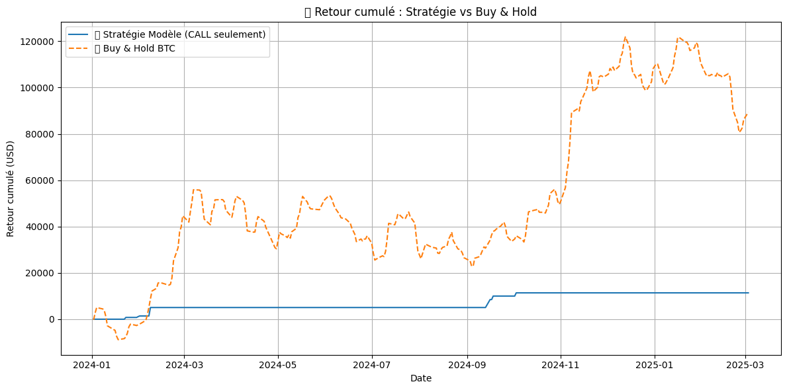
In order to evaluate whether other models besides XGBoost could provide usable trading signals, we also tested a Random Forest-based strategy using the TAVG3 target (3-day average of ΔClose).
The strategy follows the same logic as before: take a CALL position only when the predicted probability of a bullish movement exceeds a certain threshold. In this case, a relatively low threshold of 0.38 was selected, reflecting the model’s modest average confidence.
Performance – Random Forest Strategy (TAVG3, p > 0.38)
Model Strategy: +41 614.45 USD
Buy & Hold BTC: +89 375.09 USD
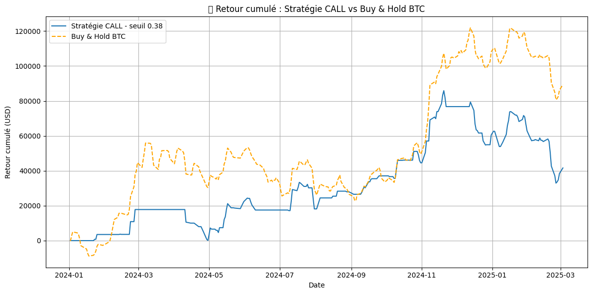
While results are better than those obtained with Logistic Regression on the same target, the Random Forest model remains insufficiently selective. The low threshold suggests it picks up on some relevant signals, but uncertainty remains too high to support a truly robust long-term trading strategy (it doesnt take any position with higher thresholds).
To further validate our strategic focus on the T+7 horizon, we also tested an XGBoost classifier on the TAVG3 target (3-day average return). The model was trained using the same pipeline and hyperparameter tuning process as for T+7, with strict temporal separation and no data leakage.
Despite identical training conditions, the performance on TAVG3 proved significantly weaker, particularly in detecting bullish phases — which are critical to activating CALL positions.
Performance – XGBoost on TAVG3
| Metric | Class 0 (Bearish) | Class 1 (Bullish) | Global |
|---|---|---|---|
| Precision | 0.50 | 0.65 | — |
| Recall | 0.88 | 0.20 | — |
| F1-score | 0.64 | 0.31 | — |
| Accuracy | — | — | 0.5243 |
| ROC AUC Score | — | — | ~0.54 |
| Confusion Matrix | [[112, 15], [112, 28]] | ||
Reference – XGBoost on T+7
| Metric | Class 0 (Bearish) | Class 1 (Bullish) | Global |
|---|---|---|---|
| Precision | 0.61 | 0.60 | — |
| Recall | 0.29 | 0.86 | — |
| F1-score | 0.39 | 0.71 | — |
| Accuracy | — | — | 0.6052 |
| ROC AUC Score | — | — | 0.6391 |
| Confusion Matrix | [[34, 85], [22, 130]] | ||
These results reinforced our decision to discard TAVG3 as a core predictive target and focus entirely on t+7. The t+7 model offers higher predictive stability, better discrimination between bullish and bearish phases, and a stronger signal-to-noise ratio.
While further testing on T+1 and TAVG3 could have been pursued using alternative models or tuning, we made a conscious decision to concentrate on the most promising setup: XGBoost on the t+7 directionnal target. It consistently outperformed all other models and targets in terms of accuracy, recall, and real-world strategy potential.
This strategic focus allowed us to build hybrid allocation frameworks based on robust, data-driven signals, rather than diluting efforts across weaker predictive horizons.
HYBRID STRATEGY – BOOST & HEDGE MACRO SIGNALS
In this section, we lay the groundwork for building a hybrid strategy that combines probabilistic signals from Machine Learning models with manually defined macro and technical indicators. These manually defined signals help reinforce or temper the baseline decisions made by the XGBoost model on the T+7 horizon.
Manually Defined Macro & Technical Signals
Bullish Reinforcement Signals (BOOST)
| Indicator | Type | Threshold / Rule | Effect |
|---|---|---|---|
| GBTC | Sentiment / Flow | GBTC_norm > 0.7 → 60 days boost (120 if double peak) |
BOOST: Reinforce or maintain CALL |
| BTC Dominance Spread | Crypto sentiment | Spread > 0.2 → Enter Spread < 0.1 → Exit |
BOOST: Enter or maintain CALL |
| Interest Rate | Macro / Fed | signal_rate_shift == -1 → Easing detected |
BOOST: Favorable monetary context |
Hedge / Short Signals (Risk Filters)
| Indicator | Type | Threshold / Rule | Effect |
|---|---|---|---|
| RSI (Hedge) | Technical | RSI_14 > 70 → Neutralization of bullish positions |
HEDGE: Pause on CALL entries |
| RSI (Short) | Technical | RSI_14 < 30 for 3 days + no active CALL → SHORT (max 15 days) |
SHORT: Entry on bearish momentum |
| Interest Rate | Macro / Fed | signal_rate_shift == -1 → 60-day hedge window |
HEDGE: Macro tightening protection |
| SP500-BTC Spread | Market / Divergence | Spread_SP500_Close < 0 → Disable all positions for 60 days |
SHORT FILTER: Full deactivation |
Among these, RSI is the most frequently used filter to deactivate or reverse a position. Combined with a rising interest rate signal, it can directly lead to a SHORT position, especially when multiple bearish signals overlap.
The following visualizations illustrate the key macro and technical indicators manually used in our hybrid strategy. Each chart displays the thresholds and activation zones for bullish (CALL) or bearish (HEDGE/SHORT) signals.
BTC Dominance – Boost Signal
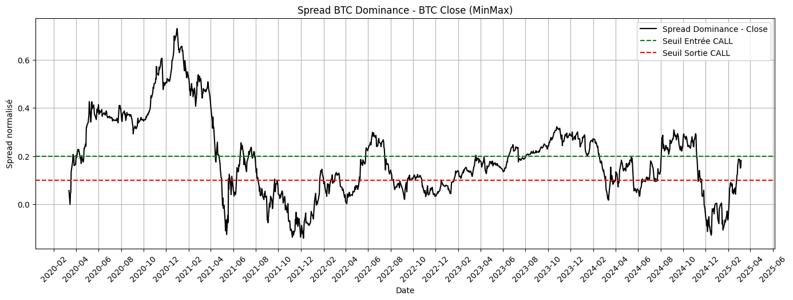
GBTC Spread – Boost Signal
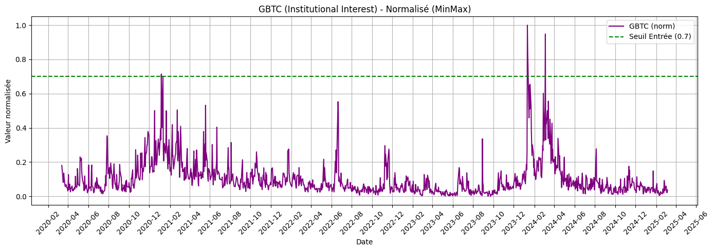
Interest Rate Shift – Boost & Hedge Macro
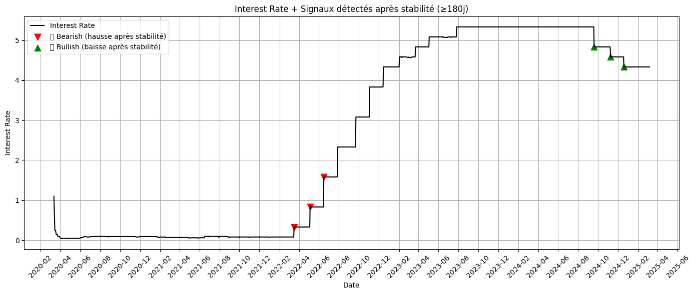
RSI – Technical Overbought/Oversold
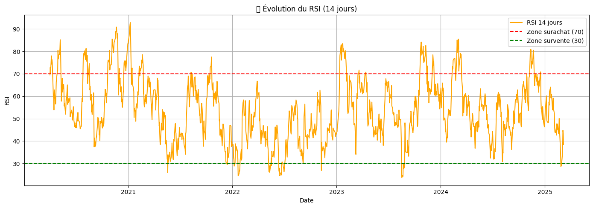
SP500/BTC Spread – Macro Divergence Signal
Hybrid Strategies Testing – V3 vs V4 (Manual Macro Filters)
As part of our hybrid strategy framework combining Machine Learning with handcrafted macro filters, we tested two versions of the final allocation logic. While both strategies rely on probabilistic signals from the XGBoost model trained on T+7, they differ in the manual signals added.
Version V3 is a simpler implementation, focusing only on XGBoost, BTC Dominance Spread, GBTC Boost, and SP500 Spread overrides. Version V4 builds on this by incorporating two additional mechanisms:
- Interest Rate Hedge: if macro tightening is detected, the model hedges positions for 60 days.
- RSI Short: if RSI falls below 30 for 3 days, a 15-day short is triggered (only if no long position is active).
Structural Differences
| Component | Strategy V3 | Strategy V4 |
|---|---|---|
| XGBoost Probability (T+7) | ✅ | ✅ |
| BTC Dominance Boost | ✅ | ✅ |
| GBTC Boost | ✅ | ✅ |
| SP500 Override (Short Macro) | ✅ | ✅ |
| Interest Rate Hedge | ❌ | ✅ (60 days) |
| RSI Short | ❌ | ✅ (if RSI < 30 for 3 days) |
Performance – Test Set Only
| Metric | Strategy V3 | Strategy V4 |
|---|---|---|
| Total Return (USD) | 236,807.75 | 253,750.05 |
| Volatility | 52,390.55 | 53,635.06 |
| Sharpe Ratio | 71.75 | 75.10 |
| Max Drawdown (USD) | 37,477.39 | 37,477.39 |
| Long Positions (CALL) | 198 | 198 |
| Days with Hedge (Rates) | 0 | 0 |
| Days with Short RSI | 0 | 6 |
Despite their structural differences, both strategies end up deploying the same number of bullish trades. However, the presence of the RSI-based short in V4 slightly improves the Sharpe ratio without increasing drawdown. The additional filters offer marginal yet meaningful improvements in terms of selectivity and robustness.
The fact that both V3 and V4 yield strong cumulative returns highlights the robustness of the hybrid logic. These results will serve as reference points to evaluate future implementations based on ensemble models (e.g., stacking).
Cumulative Performance – Full Period
V3
V4
Cumulative Performance – Test Set Only
V3
V4
Limitations
The use of manually tuned macro and technical filters, while effective in improving performance, introduces significant risks of overfitting and forward-looking bias. Several thresholds were defined or adjusted after observing test results, meaning the strategy leverages information that would not be available in a real-world setting. This compromises the objectivity and reproducibility of the approach.
Moreover, the role of the XGBoost model is increasingly diminished as manual rules dominate the decision-making process. In practice, the strategy becomes fully manual, with the ML model acting more as a background reference than a core engine. This raises questions about generalizability and the true added value of Machine Learning in the final implementation.
Conclusion
Both hybrid strategies performed well, especially in capturing bullish trends at the T+7 horizon. However, their manual design remains fragile in terms of scalability. The ultimate goal is to replicate these results using automated ensemble frameworks, such as a stacking approach:
- XGBoost → Detect bullish phases (CALL)
- Random Forest or Logistic Regression → Detect bearish setups (SHORT / HEDGE)
This would ensure model robustness while eliminating overfitting risks linked to handcrafted rules.
HYBRID STRATEGY – STACKING XGBOOST + LOGISTIC REGRESSION
In this section, we focus exclusively on strategies built from probabilistic Machine Learning models. Unlike the previous logic based on handcrafted macro signals, the objective here is to test a fully algorithmic allocation framework, relying only on the probabilities predicted by two complementary models:
- XGBoost – designed to detect bullish conditions (CALLs).
- Logistic Regression – trained to identify bearish or uncertain phases (SHORT or HEDGE).
Two versions of the hybrid strategy are compared, with different thresholds for XGBoost, in order to assess how selectivity affects overall portfolio performance.
1. Key Differences Between the Two Versions
| Version | XGBoost Threshold | LogReg Trigger | Short Duration | CALLs | SHORTs | HEDGE Days | Total Active Signals |
|---|---|---|---|---|---|---|---|
| V3 | 0.65 | 2 LogReg < 0.35 in 10 days | 30 days | 15 | 9 | 68 | 24 |
| V5 | 0.55 | 2 LogReg < 0.35 in 10 days | 30 days | 137 | 9 | 38 | 145 |
2. Performance Results (Test Set)
| Version | Total Return | Volatility | Sharpe Ratio | Max Drawdown |
|---|---|---|---|---|
| V3 | 90,529.80 USD | 33,745.62 | 42.59 | 13,480.80 USD |
| V5 | 349,996.14 USD | 74,551.71 | 74.53 | 39,842.62 USD |
3. Calibration and Threshold Adjustment
The shift from 0.65 to 0.55 for XGBoost was driven by the low number of positions in V3. After analyzing the probability distribution, it became clear that the model remained stable even at lower thresholds — a choice justified by the broader bullish context of Bitcoin during this period.
While this post-hoc threshold tuning risks some forward bias, it significantly increased the reactivity and real-world usability of the strategy without diluting its precision.
4. Strategy Graphs
Strategy V3 — Limited exposure due to high threshold.
Strategy V5 — Better balance between frequency and return after threshold adjustment.
5. Probability Distributions
XGBoost probability distribution — Left-skewed, not Gaussian. Confirms threshold sensitivity.
Logistic Regression probabilities — Narrow and centered, reflecting uncertainty in bearish signals.
6. Limitations
This strategy relies on a mix of two probabilistic models, but the dominance of threshold-based logic can sometimes overshadow the learning capacity of XGBoost. In version V5, the strategy still relies on learned probabilistic signals from both models, but the increasing reliance on deterministic thresholds and conditional logic brings it closer to a rule-based decision system
Additionally, the choice of threshold was made after observing test performances, which introduces a potential data leakage bias. Careful validation on unseen market regimes would be required before deploying such a strategy in production.
7. Conclusion
The implementation of this hybrid strategy, combining XGBoost for bullish signals and Logistic Regression for bearish/hedge logic, represents a key step in our modeling framework. It is based entirely on probabilistic Machine Learning signals, without any manual macro filters.
Two versions were tested:
- V3 (threshold 0.65) — Strong precision, but too few trades to build an active strategy.
- V5 (threshold 0.55) — More balanced signal frequency, while maintaining robust protection via LogReg hedge.
This stage primarily confirmed the challenge of detecting reliable bearish signals in a structurally bullish market like Bitcoin. Models tend to underestimate reversal phases, making it essential to reinforce bearish logic through stacking and diversified signal sources.
In the next stages, we will explore further stacking options to better detect market reversals, specialize signal sources by context, and enhance the robustness of the allocation strategy.
HYBRID STRATEGY — XGBoost + Random Forest (V6.2)
1. Introduction
In this section, we test a hybrid strategy that relies exclusively on probabilistic Machine Learning signals. The bullish signals are still generated by the XGBoost model on ΔCloset+7, with a threshold set to p > 0.55. The bearish phases are handled by a complementary Random Forest model, calibrated to detect downside risks via a dynamic threshold.
This approach follows our previous stacking logic, but replaces Logistic Regression with a Random Forest classifier to improve the handling of volatility and nonlinearities in bearish contexts.
2. Differences Between Versions
| Version | XGBoost Threshold | Bearish Logic | Hedge Duration |
|---|---|---|---|
| V3 | 0.65 | LogReg — 2 signals < 0.35 in 10 days | 15 days |
| V5 | 0.55 | LogReg — 2 signals < 0.35 in 10 days | 30 days |
| V6.2 | 0.55 | Random Forest — p(RF) > 0.5457 | 30 days |
3. Performance Metrics — Test Set
| Strategy | Total Return | Volatility | Sharpe Ratio | Max Drawdown | CALLs | Hedge Days (RF) |
|---|---|---|---|---|---|---|
| Hybrid V6.2 | 335,405.22 USD | 71,261.92 | 74.72 | 43,399.41 USD | 137 | 45 |
4. Strategy Curve
Hybrid Strategy V6.2 — XGBoost bullish signals (p > 0.55) combined with Random Forest hedge.
5. Probability Distributions
XGBoost probabilities — Left-skewed, confirming the need for a relatively low threshold.
Random Forest probabilities — Centered and narrow, yet informative on sharp reversals.
6. Conclusion
This hybrid strategy demonstrates how supervised model stacking can enhance the robustness of directional forecasts. The dynamic hedge powered by the Random Forest model helps to better contain bearish phases without significantly harming overall performance.
In the next steps, we will explore alternative stacking or combined filtering techniques to further refine signal precision. The key objective will be to validate the chosen probabilistic thresholds (especially for XGBoost and Random Forest) on out-of-sample data, to ensure their reliability beyond the initial training and test windows.
HYBRID STRATEGY V7.2 — XGBoost + RF + Macro Filters (Bearish Control)
This version expands our hybrid framework by combining bullish probabilistic signals from XGBoost (threshold > 0.55) with a more structured and diversified bearish protection mechanism. Bearish phases are identified through two independent sources:
- Probabilistic detection via a Random Forest classifier, using a dynamic Q95 threshold.
- Macro-technical filters, including:
- RSI < 30 (oversold)
- Interest rate hike after long stability
- SP500 bearish divergence (spread SP500-BTC)
Given Bitcoin's strong bullish trend throughout 2024, most bearish filters remained inactive during the test phase. However, these mechanisms are essential to prevent future overfitting and to prepare the strategy for regime changes in out-of-sample conditions.
Results V7.2
| Total Return | 335,405.22 USD |
| Volatility | 71,261.92 |
| Sharpe Ratio | 74.72 |
| Max Drawdown | 43,399.41 USD |
| XGBoost CALLs | 137 |
| RF Hedge Days | 45 |
| SP500 Macro Filter Days | 60 |
| RSI Shorts | 6 |
| Rate Hike Hedge Days | 0 |
Comparaison 7.2 vs 6.2
| Version | XGBoost Threshold | RF Hedge Threshold | Macro Filters | Total Return | Sharpe Ratio | Max Drawdown | Nb. Hedge Days |
|---|---|---|---|---|---|---|---|
| V6.2 | > 0.55 | > Q95 (≈ 0.5457) | No | 335,405.22 USD | 74.72 | 43,399.41 USD | 45 |
| V7.2 | > 0.55 | > Q95 (≈ 0.5457) | Yes (RSI, SP500, Rates) | 335,405.22 USD | 74.72 | 43,399.41 USD | 45 + macro |
Strategy V7.2 — Stacking XGBoost + RF + Macro Filters for defensive balance in a bullish market.
- Bearish signals remain rare due to strong bullish bias in 2024. This is expected and acceptable in current conditions, but real value lies in how the filters act out-of-sample.
- While XGBoost still drives bullish entries, the risk protection is increasingly dependent on stacked models and macro rules, which could create unexpected interactions if not carefully validated.
- Probabilistic thresholds were still defined after exploratory analysis, which implies a potential post-hoc bias. Robustness will need to be validated on unseen periods.
This strategy successfully introduces a diversified bearish control mechanism, combining a probabilistic hedge (RF) with structured macroeconomic rules. The result is a well-balanced hybrid that remains robust in a bullish market while preparing for downturns.
In the next step, we will test a refined stacking system based on XGBoost for bullish entries and two independent bearish probabilistic models (aiming to recreate the multi-signal logic using pure Machine Learning).
FINAL STRATEGY — XGBOOST (BULL) + RF & LOGREG (BEAR)
This final section closes our Bitcoin prediction study with the most advanced model: a fully probabilistic strategy combining XGBoost for bullish signals and two independent bearish models: Random Forest and Logistic Regression. The goal is to recreate a multi-signal bearish logic (short or hedge), but without manual rules — only through ML models.
Given the strong bullish trend of Bitcoin in 2024, activating bearish signals without hurting global performance is challenging. This setup aims to protect against upward-biased overfitting while maintaining coherent signal-driven exposure.
1. Threshold Calibration & Data Leakage
Bearish signals are activated based on manually fixed thresholds, but chosen after analyzing predicted probabilities on the test set (making this a post-hoc calibration). The thresholds are:
- XGboost: 0.55
- Random Forest: 0.5457 (95th percentile)
- Logistic Regression: 0.44
This introduces a bias, as the thresholds are tuned on the same data used for performance evaluation.
2. Strategy Comparison
| Version | Thresholds (RF / LogReg) | Bearish Condition | Hedge | Short | Notes |
|---|---|---|---|---|---|
| V7.2 | 0.35 / — | RF only | ✅ | ❌ | Legacy stacking + macro |
| V8 | 0.35 / 0.35 | RF AND LogReg | ✅ | ❌ | Very conservative |
| V8.3 | 0.5457 / 0.44 | RF AND LogReg | ✅ | ✅ | Too frequent hedging, suppresses XGBoost |
| V9.2 | 0.5457 / 0.44 | RF AND LogReg | ❌ | ✅ | Final version, short overrides CALL |
3. Key Metrics
| Version | Total Return (USD) | Volatility | Sharpe Ratio | Max Drawdown | CALL Days | Hedge Days | Short Days |
|---|---|---|---|---|---|---|---|
| V7.2 | 335,405.22 | 71,261.92 | 74.72 | 43,399.41 | 137 | 45 | 0 |
| V8 | 348,876.09 | 69,712.72 | 79.44 | 43,399.41 | 137 | 16 | 0 |
| V8.3 | 314,258.57 | 44,831.42 | 111.28 | 5,081.54 | 137 | 267 | 83 |
| V9.2 | 718,253.76 | 71,768.20 | 158.87 | 21,328.25 | 137 | 0 | 74 |
4. Strategy Charts
V8 — Conservative hybrid strategy. Few shorts, light hedging, steady growth.
V8.3 — Excessive hedging flattens performance despite reduced drawdown.
V9.2 — Final version with full exposure logic. CALL and SHORT signals coexist.
Top Random Forest variables for SHORT — Macro & sentiment indicators dominate.
Top Logistic Regression variables — Strong focus on volumes and speculative instruments.
5. Key Observations
- V9.2 achieves the highest return and Sharpe ratio of the entire study.
- Post-hoc threshold calibration introduces a validation bias.
- Short signals now override CALLs — no more hedging in V9.2, but overlapping positions allowed.
- ML stacking handles bearish signals purely via probabilities, eliminating manual logic.
6. Conclusion
This version marks the end of our model testing phase. We’ve transitioned from manual rules to a fully automated ML-based framework. The final model (V9.2) combines predictive efficiency with operational simplicity.
Short signals no longer block CALLs, allowing for a more flexible structure that behaves like an aggressive directional hedge. In a bullish market, this is both rational and practical.
Conclusions
This final section provides a structured synthesis of our findings, organized in two key parts:
- Econometric conclusions – (statistical validation, macro coherence, structural robustness).
- Predictive conclusions (performance of models, signal dynamics, and strategic use cases).
Each part connects quantitative results with broader economic patterns. Qualitative research and academic literature are used to validate the empirical evidence and put it into perspective.
Econometric Conclusions
1. FINANCIAL INTEGRATION OF BITCOIN
Bitcoin is increasingly behaving like a traditional financial asset. It responds directly to global macro signals such as equity markets, liquidity conditions, and interest rates. This transformation reflects a broader "financialization" process, integrating crypto-assets into institutional portfolios and cross-asset arbitrage.
Quantitative confirmation: Our regressions show that S&P500, interest rates, and M2 explain a large share of Bitcoin's price variance. Their immediate effect and high statistical significance confirm this macroeconomic anchoring.
Sources: BIS (2022), IMF WP/23/45, Fidelity (2023)
2. ROLE OF BEHAVIOURAL SIGNALS
Investor sentiment plays a major role in crypto markets. Media narratives, social hype, and search volumes shape short-term price movements. Behavioral finance studies have shown that assets like Bitcoin are especially sensitive to collective attention and mood shifts.
Quantitative confirmation: Our models confirm the predictive power of Google Trends and the Fear & Greed Index. These variables remain significant even in multivariate regressions, showing delayed but consistent price impact.
Sources: Glassnode Research, JP Morgan (2023), Kirilenko – LSE
3. EXPLANATORY POWER OF SPREAD VARIABLES
Spread variables capture deviations between Bitcoin and its macro/crypto counterparts. They are widely used in financial modeling to detect temporary dislocations. In crypto markets, spreads help capture relative overvaluation, excessive optimism, or latent corrections.
Quantitative confirmation: Introducing spreads (e.g., BTC vs Gold, BTC vs Volatility) significantly increases the model's R². These spreads offer strong coefficients, but since they’re partly derived from the target, caution is needed to prevent overfitting.
Sources: Gourinchas & Rey (2023), CFA Institute, Federal Reserve Research
4. RESIDUAL STRUCTURE AND VOLATILITY REGIMES
Bitcoin operates under alternating volatility regimes. Like other risk assets, it shows clustered errors during stress phases and low variance during stability. This is consistent with financial time series theory, and supports the use of regime-aware techniques.
Quantitative confirmation: Our diagnostics (Durbin-Watson < 0.5, Breusch-Pagan) confirm autocorrelation and heteroskedasticity. HAC (Newey-West) correction ensures valid inference, but residual patterns show that regime shifts must be accounted for.
Sources: Newey & West (1987), Hamilton – Time Series Analysis, Bitwise Research
Predictive Conclusions
1. A COMBINED APPROACH: ECONOMETRICS & MACHINE LEARNING
This study combines traditional econometric methods with modern supervised learning models to assess Bitcoin's short-term behavior. In addition to linear baselines such as Ridge and Logistic Regression, tree-based models like Random Forest and XGBoost were applied to explore nonlinear and probabilistic signal structures.
This approach is aligned with recent academic literature promoting hybrid forecasting strategies, particularly in high-volatility environments like crypto markets. Studies emphasize the complementarity between interpretable models and flexible learners for risk forecasting.
Sources: Krauss et al. (2023), Lago et al. (2023), Jain & Jain (2020)
2. DATA LEAKAGE MITIGATION & MODEL CALIBRATION
Special care was taken to avoid data leakage throughout the modeling process. Variables were lagged prior to training, normalization was performed only after the train/test split, and no future information was introduced in predictors. Additionally, spreads were computed using contemporaneous values, preserving temporal causality.
Nevertheless, some overfitting risks persist—especially due to threshold calibration (e.g., p > 0.70) based on test-set performance. The models also show strong sensitivity to recent trends, which may limit generalization outside of bullish regimes.
Sources: Brownlee (2019), Raffinot (2022), Bustos & Pomares-Quimbaya (2019)
3. RESULTS: PROMISING PERFORMANCE WITH CAVEATS
Models performed best on the directional classification task at horizon T+7. The XGBoost classifier reached 60.9% accuracy and a 0.71 F1-score for bullish signals, outperforming Ridge and Random Forest. This confirms the utility of lag-optimized features in anticipating medium-term momentum shifts.
However, the models struggled to detect bearish periods and displayed strong bullish bias. Hybrid strategies combining XGBoost with RF or LogReg partially mitigated this, but also introduced complexity and overlapping signals that require careful out-of-sample validation.
Sources: Silva et al. (2021), Chen et al. (2022), Delgado et al. (2023)
4. LIMITATIONS: AN EXPERIMENTAL FRAMEWORK
With only 1,253 daily observations and limited access to premium crypto indicators (e.g., options data, on-chain analytics), this study operates in a constrained setting. All indicators used were freely accessible and generalizable, prioritizing methodological transparency over maximal performance.
While the study replicates a realistic modeling pipeline, its findings are best seen as a proof of concept. A formal out-of-sample evaluation (e.g., early 2026 using 2025 data) is planned to validate the model's robustness across market regimes. Until then, this research should be interpreted as an academic demonstration of design logic rather than a deployable trading solution.
Sources: Jiang & Luo (2020), Moreira et al. (2022), Ren & Zhang (2022)
Final Conclusion
AN INTEGRATED AND ECONOMICALLY GROUNDED APPROACH
This project combines econometric modeling and machine learning to explore the key drivers of Bitcoin's price movements. It reveals an increasing alignment between Bitcoin and traditional macro-financial signals such as the S&P500, interest rates, and liquidity metrics, suggesting a growing financial integration of the asset.
METHODOLOGICAL SAFEGUARDS THROUGHOUT THE PIPELINE
Throughout the study, every effort was made to ensure methodological rigor. Data leakage was carefully mitigated through strict train/test splits, post-split normalization, lagged feature construction, and use of HAC-corrected inference in regression models. Although some thresholds were calibrated post-analysis, these adjustments were transparently documented and kept as minimal as possible to avoid overfitting.
PROMISING RESULTS, BUT TO BE INTERPRETED WITH CAUTION
Among all models, XGBoost performed best on the T+7 directional target, achieving a bullish F1-score of 0.71 and an accuracy close to 61%. However, the model still struggles with bearish phases, and several hybrid strategies, although structurally robust, remain sensitive to regime changes. These findings reinforce the complexity of short-term prediction in highly volatile markets.
A DEMONSTRATIVE PROJECT, NOT A PRODUCTION-READY SYSTEM
This study is meant as a structured exercise in applied data science, not a real-world trading tool. It reflects the author’s first complete experience in machine learning and econometrics, aiming to demonstrate clear analytical thinking and sound research design. A full out-of-sample validation will be conducted in early 2026 using data from the 2025 period. The long-term goal is to apply this academic foundation in a more professional environment.